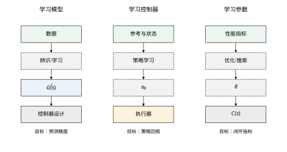
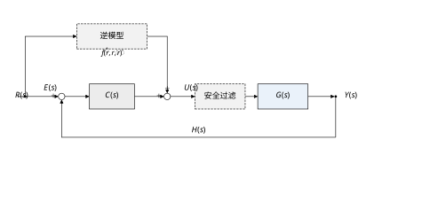
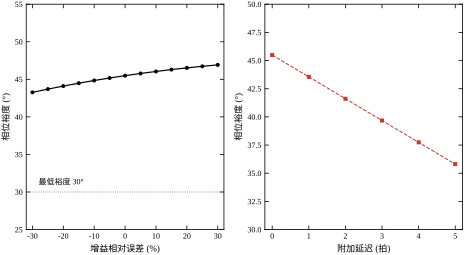
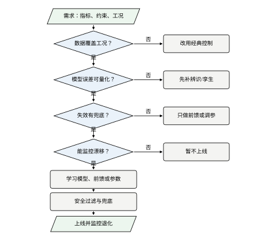
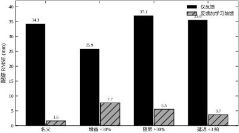
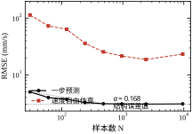

一台伺服轴要把工件从 0 推到 1 m。工程师用带微分滤波的 PID 把位置环调好：比例增益 2.0，积分增益 1.5，微分增益 0.25，微分滤波时间常数 0.02 s。阶跃试验的结果看上去合格——超调 0.96%，稳态误差 1.19 mm，相位裕度 45.5°，增益裕度 25.2 dB。但把整段过渡过程积分起来，跟踪均方根误差是 34.30 mm，最大偏差达到 131.65 mm。也就是说，轴在“快到位”的那一段落后指令十几厘米，靠积分项慢慢追回来。
这段落后的来源并不神秘：控制器不知道下一时刻需要多大的力矩去克服摩擦、抵消惯量，它只能等误差出现再反应。人可以把经验写成前馈曲线，但换一台轴、换一批工件、换一个节拍，曲线就得重做。学习的切入点正在这里：让机器从数据里把“提前量”学出来，而不是让反馈事后补救。
反馈的价值在于“不需要知道”。对象增益变了、摩擦大了、负载重了，只要闭环还稳定，反馈会把误差拉回零附近。前面关于灵敏度函数的讨论已经说明，反馈用回路增益换取对参数摄动的免疫。但反馈有两个天生的盲区：一是它只能在误差出现之后动作，对快速轨迹必然产生动态滞后；二是它无法预知未来的指令与扰动，遇到重复性任务时每次都要重新“犯错—纠正”。
学习恰好补这两个盲区。它可以从历史数据中提取对象的逆动态、摩擦特性、执行器非线性，提前给出控制量；也可以从反复试验中调整参数，把人工试凑变成可复现的优化。但学习不提供稳定性保证：一个学出来的前馈若带 0.0004 的常值偏置，在没有反馈的轴上会被阻尼积分成缓慢漂移；若对象接近双积分，偏置会积分两次，误差随时间平方增长。所以本章的主线不是“学习替代控制”，而是“学习补前馈，反馈保底”。
“学习控制”是一个被用得很宽的词。为了把问题说清楚，本章按“学什么”把它分成三类，后续各章再分别展开。
| 范式 | 学到的对象 | 典型方法 | 数据需求 | 主要风险 | 相关章节 |
|---|---|---|---|---|---|
| 学习模型 | 对象或逆对象的映射 \hat{G} | ARX、子空间、神经网络 | 中到高 | 模型误差进入闭环 | 第16–22章 |
| 学习控制器 | 策略 \pi_\theta 或前馈 \hat{f} | 行为克隆、强化学习、迭代学习 | 高 | 分布外失效、无稳定性证明 | 第23–30章 |
| 学习参数 | 控制器参数 \theta | 贝叶斯优化、极值搜索、自动整定 | 低到中 | 目标函数写错 | 第31–36章 |
三类范式不是互斥的。工程上最常见、风险最低的组合是“学模型 + 学前馈 + 保留原反馈”：模型只用于生成前馈量，反馈回路原封不动，因此稳定性结论可以直接沿用。本章的仿真就采用这个组合。

图 15-1 把三类范式并排画出。左列学模型，产物是 \hat{G}(s)，用于控制器设计或前馈计算；中列直接学策略 \pi_\theta，产物直接给出控制量；右列学参数 \theta，产物送进固定结构的控制器 C(s)。三列的“数据—学习—使用”链条相同，但风险递增：模型错了可以在设计阶段发现，策略错了往往要等上线才暴露，参数错了则可能让原本稳定的回路失稳。
如果只能记住一句话：学习负责“提前知道”，反馈负责“出了事还能回来”；任何把反馈拿掉的学习控制，都要单独证明稳定性。
本章按“问题—定义—性质—实现—边界—验证—总结”推进。§15.2 给出三类范式的统一数学表述，说明监督学习、逆模型学习与参数优化各自的优化目标；§15.3 推导三条关键性质：前馈为什么不改变回路特征方程、模型误差如何折算成相位裕度损失、纯前馈为什么会被常值偏置击穿；§15.4 讨论采样、延迟、训练与推理对齐等离散实现问题；§15.5 给出“何时值得用学习”的判据与安全架构；§15.6 用一台带摩擦、延迟与限幅的伺服轴复现全部数字；§15.7 汇总常见错误与检查清单。
不同读者可以走不同路径。关心选型的，读 §15.1、§15.5、§15.7；要做算法落地的，读 §15.2–§15.4、§15.6；要把学习写进论文的，重点看 §15.3 的稳定性推导与 §15.6 的对照实验。三条路径都以 §15.6 的脚本为落点，不跑一遍代码，文中的数就只是别人的数。
概念之前先看三个反例，它们分别对应后面三节要讲的性质。
反例一：一步预测很准，闭环仍然振荡。 用 9600 组速度数据做 ARX 辨识，一步预测均方根误差只有 3.07 mm/s，看起来可以交付。但把模型放进控制器设计，若模型少算 1 拍纯延迟，相位裕度就从 45.5° 掉到 43.55°；少算 3 拍，只剩 39.68°。模型在时域上“准”，不代表它在穿越频率上的相位“准”。这就是 §15.2 要把时域误差与频域误差分开定义的原因。
反例二：前馈学得很好，外推一米就崩。 用 5 条轨迹、约 5600 组数据学出四参数逆模型，在 1 m 阶跃上把跟踪均方根误差从 34.30 mm 压到 1.61 mm，改善 95.3%。同一组参数直接用于 3 m 行程，并把对象增益调高 30%，纯前馈的最大偏差变成 1050.17 mm，超调 35.01%。原因不是“数据不够”：训练分布只覆盖 0.2–1.0 m，对象增益又比训练时高 30%，纯前馈把轴推过 3 m 后停在 4.05 m，摩擦把它锁在那里，误差不会自己回来。加上反馈兜底后，最大偏差回到 67.20 mm。
反例三：数据翻 320 倍，误差只降 1.63 倍。 样本从 30 增到 9600，一步预测误差从 5.00 mm/s 降到 3.07 mm/s，只降了 1.63 倍；自由仿真误差从 114.23 mm/s 降到 23.32 mm/s，降了 4.90 倍。误差在 240 组附近就进入平台，平台高度由未建模摩擦决定，而不是由样本量决定。数据效率的上限由模型结构设定；结构不对，加数据只是把同一堵墙刷得更亮。
三个反例指向同一件事：学习的收益与风险都来自“它把先验放进了系统”。先验放对了，前馈提前量准、参数收敛快；先验放错了，误差会被闭环放大，甚至被积分器累积成事故。本章后面的公式，都是为了让“先验放得对不对”这件事可以被量化检查。
工程现场说“学习”，往往指五六种不同的东西。它们在数据来源、是否在线、能否证明稳定性上差别很大，混为一谈会导致选错方法。
第一种是系统辨识。它在离线阶段用数据拟合模型，产物是一个传递函数或状态空间，不直接进入实时回路。它的风险是可量化的：模型误差可以折算成相位裕度，折算方法见 §15.3.2。
第二种是自适应控制。它在线调整参数，参数在回路内，因此必须回答稳定性问题。它的优势是结构已知、假设明确，可以用 Lyapunov 方法证明收敛；劣势是只能调参数，结构错了补不上。第 61 章会完整展开。
第三种是迭代学习控制。它利用“同一轨迹重复执行”这一条件，用上一次的误差修正这一次的输入。它不学模型，也不学参数，学的是整条输入曲线。前提是重复性，一旦轨迹变化就要重新收敛。第 69 章专讲。
第四种是监督学习前馈，也就是本章采用的方式。它离线学一个从参考到控制量的映射，产物在回路外，稳定性不受影响。它的边界是训练分布，外推失效的后果见 §15.3.3。
第五种是强化学习策略。它通过试错学习策略，通常不带模型，训练数据来自与环境的交互。它的表达能力强，但稳定性最难保证，分布外行为最难预测。第 32、33、70 章分别讲基础、深度与在控制中的应用。
五种方法的选型可以按三个问题走。任务是否重复？重复就先考虑迭代学习，数据效率最高。结构是否已知、只是参数不确定？是就先用自适应，可证明性最好。参考是否任意、只缺提前量？是就用监督学习前馈，风险最低。三个问题都答“否”，才轮到强化学习。
还要区分“学习”与“优化”。整定 PID 参数、搜索前馈曲线、调滤波时间常数，本质上都是优化，只是优化器换成了数据驱动的方法。它们不产生新的函数形式，因此不改变系统的结构风险；本章 §15.2.4 把它们单列一类，原因就在这里。
最后一条边界是术语上的。本书说“学习”，默认指“从数据中提取可复用的映射或参数”，不包含“规则库由人写”的专家系统。专家控制的推理规则来自人，不来自数据，第 66 章单独处理。把两者混在一起，会在评价时说错话：专家系统的可解释性来自规则，学习系统的可解释性来自数据分布，两者不能互相借用。
引导章要替后面七章把口径定下来，否则第 16 章之后的每张表都得重新解释一遍。
| 符号 | 含义 | 本章单位 | 备注 |
|---|---|---|---|
| r,\ y,\ e | 参考、输出、误差 | m（位置） | 误差图另用 mm 作纵轴 |
| \dot y,\ v | 速度 | mm/s | 只在速度环与摩擦讨论中出现 |
| u,\ u_{ff},\ u_{fb} | 控制量、前馈分量、反馈分量 | 归一化 | 1 对应额定力矩 |
| G,\ C | 对象、控制器 | — | 本章 G 为三阶带延迟 |
| T_d,\ \omega_c | 纯延迟、剪切频率 | s、rad/s | T_d 取整数拍 |
| \Delta P_m | 相位裕度损失 | ° | 只在折算时出现 |
单位混用是这一章最容易出错的地方，原因很实在：位置用米、误差用毫米、速度用毫米每秒，三套单位在同一个图里出现，读者很容易把“3.05 mm/s 的误差平台”读成“3.05 mm 的位置偏差”，两者差了三个数量级。本章的处理办法是每个数字都带单位，且正文里绝不省略：凡写“毫米”，一定指位置误差；凡写“mm/s”，一定指速度。表格的列头也照此执行。
符号上还有一处刻意的简化。本书不区分“参考”与“设定值”，统一用 r；不区分“输出”与“被控量”，统一用 y。这样做牺牲了一点严谨性，换来的是后文所有框图与公式可以互换阅读。若某章需要区分（例如串级控制中的内外环），那一章会单独声明，不在本章的约定之内。
仿真口径也一并固定：采样周期 0.005 s，纯延迟 2 拍，参考先经自然频率 3.0 rad/s 的二阶滤波器，指标从 0.45 s 起算，改善率统一定义为 \eta=(J_{\text{base}}-J_{\text{test}})/J_{\text{base}}\times100\%，其中 J 可以是均方根误差，也可以是峰值偏差。分母永远是基准，不是两者的平均；这一条看着琐碎，但不同文献的改善率常常因为分母不同而差出十几个百分点，跨论文比较时必须先对齐口径。
最后是编号约定：图号、表号、式号均按“章-序”编排，本章的式号从 (15-1) 起连续编号，与后续章节不共享计数器。代码文件按 ch015_sim.py、ch015_figs.py 命名，图画到 figs/ch015/ 下。这些约定不涉及技术内容，但决定了别人能不能在半小时内把本章的图重画出来。
这一节把“学习”从口号变成可以计算的量。先给出三类范式共用的优化形式，再分别写出模型、前馈、参数三种情形的具体表达式。公式只保留后面推导与仿真要用到的部分，不铺开机器学习的一般理论。
三类范式表面差别很大：一个输出传递函数，一个输出策略网络，一个输出三个增益。写成优化问题时，骨架是同一副。给定数据集 \mathcal{D}=\{(x_k,y_k)\}_{k=1}^{N}，在假设空间 \mathcal{F} 中挑一个映射，使经验损失加正则项最小：
\hat{f}=\arg\min_{f\in\mathcal{F}}\frac{1}{N}\sum_{k=1}^{N}\ell\big(f(x_k),y_k\big)+\lambda\,\Omega(f) \tag{15-1}
其中 \ell 是损失函数，\Omega 是正则项，\lambda 控制两者的权衡。三个范式只是把输入、标签、损失换成了不同的物理量，对应关系见表 15-1。
| 范式 | 输入 x_k | 标签 y_k | 典型损失 | 产物用途 |
|---|---|---|---|---|
| 学习模型 | 历史输入输出 | 下一拍输出 | 预测均方误差 | 控制器设计、前馈计算 |
| 学习控制器 | 参考与状态 | 专家控制量或回报 | 模仿误差、负回报 | 直接给控制量 |
| 学习参数 | 闭环性能指标 | 无显式标签 | 跟踪误差加约束罚项 | 送进固定结构控制器 |
表 15-1 的三行不是三种算法，而是三种“把数据变成控制量”的路径。第一行学的是对象，第二行学的是行为，第三行学的是数字。路径越靠下，数据需求越低，可解释性越差，稳定性越难保证。
控制里的监督学习与图像分类的差别不在公式，而在数据分布。图像样本可以近似认为独立同分布；控制数据由闭环产生，x_k 的分布依赖当前控制器与参考轨迹，记作 x_k\sim p_{\pi_\theta}(\cdot)。控制器一更新，分布就变。这是分布偏移在控制里的具体形态，也是行为克隆在误差累积后失效的根源，第23–30章会展开。
另一处差别是标签成本。y_k 若来自真实设备，每次试验都消耗时间、磨损与安全余量；若来自仿真，标签便宜，却把仿真偏差一起带了进来。数据效率因此不是学术指标，而是项目预算。后面讨论“多少数据够用”时，必须同时说明数据来自哪里。
式 (15-1) 的四个部件在控制里各有含义。假设空间决定外推方式：线性 ARX 在训练区间外按线性延伸，神经网络按学到的平滑性延伸，两者都会错，只是错法不同。损失决定学到的“准”是哪一种准：时域均方误差偏向大误差样本，频域误差直接对应裕度。数据决定分布覆盖：用 5 条 0.2–1.0 m 轨迹学出的逆模型，不能声称对 3 m 有效。正则决定先验强度：把摩擦写成 \tanh 而不是查表，等于告诉模型“摩擦是速度的奇函数且会饱和”。
本章用 ARX 代表“学习模型”这一类，理由有三条：参数是线性的，最小二乘有闭式解；传递函数可以解析算出，便于折算频域误差；样本增加时可以递推更新，适合在线使用。被控对象是伺服轴，状态为位置与速度，控制量为力矩指令。
辨识位置还是辨识速度，是一个容易踩坑的选择。位置由速度积分而来，输出噪声也被积分，辨识出的极点容易跑到单位圆外，自由仿真会一路漂走。速度信号没有这个积分环节，模型稳定性好得多。本章因此辨识速度，采样周期 0.005 s，模型结构取 ARX(1,10)：
v[k]=-a_1 v[k-1]+\sum_{i=1}^{n_b} b_i u[k-i]+e[k] \tag{15-2}
其中 v[k] 是第 k 拍速度，u[k-i] 是之前第 i 拍的控制量，n_b=10 覆盖 0.05 s 的输入记忆，e[k] 是方程误差。写成回归形式 v[k]=\varphi_k^{\mathsf T}\theta+e[k]，回归向量由历史速度与历史输入拼成，参数向量 \theta=[a_1,b_1,\dots,b_{10}]^{\mathsf T} 的最小二乘解为：
\hat{\theta}=\Big(\sum_{k=1}^{N}\varphi_k\varphi_k^{\mathsf T}\Big)^{-1}\sum_{k=1}^{N}\varphi_k v[k] \tag{15-3}
式 (15-3) 成立的前提是回归向量与方程误差不相关。闭环数据里控制量是误差的函数，误差又含噪声，这个前提只是近似成立，所以闭环辨识得到的参数会有偏。工程上的对策是加微弱激励或使用增广最小二乘，本章的仿真用 0.002 的速度测量噪声，偏差控制在可接受范围。
评价模型要同时看两种误差。一步预测误差每一步都用实测速度重新起步，衡量的是“局部斜率”；自由仿真误差把模型自己的输出接回去，跑 500 步，衡量的是“长期走向”。两者定义如下：
e_{\mathrm{1step}}=\sqrt{\frac{1}{N}\sum_{k=1}^{N}\big(v[k]-\hat{v}[k\mid k-1]\big)^2} \tag{15-4}
e_{\mathrm{free}}=\sqrt{\frac{1}{M}\sum_{k=1}^{M}\big(v[k]-\hat{v}_{\mathrm{free}}[k]\big)^2} \tag{15-5}
式 (15-4) 中 \hat{v}[k\mid k-1] 只用 k-1 及以前的信息；式 (15-5) 中 \hat{v}_{\mathrm{free}} 的每一步输入都来自模型自身的预测。前者对应“给定真实状态能预测多准”，后者对应“放手让模型跑会偏多远”。控制器设计关心的是后者，因为闭环里的模型误差会沿时间累积。
表 15-2 是本章脚本在八种样本量下的实测结果。训练数据由一段伪随机输入激励产生，验证数据独立生成，自由仿真长度 500 步。
| 样本数 N | 一步误差 (mm/s) | 自由仿真误差 (mm/s) | 4 rad/s 增益误差 (%) | 4 rad/s 相位差 (°) |
|---|---|---|---|---|
| 30 | 4.999 | 114.231 | -12.10 | +13.59 |
| 60 | 3.978 | 73.354 | -11.26 | +10.23 |
| 120 | 3.690 | 63.879 | -10.13 | +9.44 |
| 240 | 3.247 | 36.069 | -3.02 | +1.72 |
| 480 | 3.091 | 25.517 | -3.18 | +2.80 |
| 960 | 3.062 | 21.538 | -3.41 | +3.38 |
| 2400 | 3.042 | 18.730 | -3.62 | +3.93 |
| 9600 | 3.066 | 23.318 | -3.03 | +3.23 |
表 15-2 有两条读法。第一条看趋势：样本从 30 增到 240，一步误差从 4.999 降到 3.247 mm/s，自由误差从 114.231 降到 36.069 mm/s，这一段确实“加数据有用”；从 240 再增到 9600，一步误差只降到 3.066 mm/s，几乎不动。第二条看差异：同样 320 倍数据，一步误差只改善 1.63 倍，自由误差改善 4.90 倍，说明自由仿真对结构误差更敏感。
对前四点做幂律拟合，指数 \alpha=0.168；对后四点拟合，指数 -0.001。前者说明小样本阶段每翻一倍数据误差降约 11%，后者说明平台已经到来。平台高度约 3.05 mm/s，由未建模的摩擦与测量噪声共同决定，不是靠继续加样本能压下去的。
平台为什么存在？ARX 是线性模型，而对象里的库仑摩擦是速度的饱和非线性。辨识算法只能把摩擦的平均效果折进一个等效阻尼，折进去之后，剩余的部分就变成固定偏差。样本再多，也只能把这个平均值估得更准，不能把非线性变成线性。这就是“结构误差”的含义：误差的地板由模型结构设定，样本量只决定多快撞到地板。
频域上同样能看到这件事。表 15-2 最后一列显示，样本足够后模型在 4 rad/s 的增益误差稳定在 -3\% 左右，相位差稳定在 +3^\circ 左右，再增加数据也收不回来。这个 4 rad/s 不是随便选的，它接近名义闭环的穿越频率 6.76 rad/s 的下方，是前馈最需要准确的频段。时域误差小不等于频域误差小，下一节会把这句话变成裕度的计算。
ARX 什么时候不能用？三类情形要警惕：对象在工作区间内跨越多个摩擦状态，线性模型无法同时描述；存在明显死区、迟滞或反向间隙，输出不只由历史输入决定；工作点大幅变化，参数随位置或负载漂移。遇到这三类情形，要么换非线性模型结构，要么把工作区间切小分段建模，要么承认模型只做前馈、不参与稳定性判断。
反馈只能等误差出现，前馈可以提前给量。两者叠加是最常见的工程结构：
u[k]=u_{fb}[k]+u_{ff}[k],\qquad u_{ff}[k]=\hat{f}\big(r[k],\dot r[k],\ddot r[k]\big) \tag{15-6}
其中 u_{fb} 由原控制器产生，u_{ff} 由学到的逆模型产生，r,\dot r,\ddot r 是参考的位置、速度、加速度。图 15-2 画出了这个结构：参考信号分两路，一路进反馈比较，一路进逆模型；两路在求和点相加，再经安全过滤送到对象。

图 15-2 的关键在于前馈通道不经过误差。误差 E(s) 只进入 C(s)，逆模型 \hat{f} 的输入是参考及其导数。这个连接方式决定了下一节要证明的性质：前馈不进入闭环特征方程，因此不改变稳定性，只改变输入端的驱动力。安全过滤放在求和点之后，对总控制量做限幅与变化率限制，是学习通道失效时的最后一道闸。
逆模型长什么样，取决于对象里有哪些物理效应。本章的伺服轴有惯量、粘性阻尼、库仑摩擦与力矩限幅，忽略限幅时可写成：
u_{ff}=w_0+w_1\dot r+w_2\ddot r+w_3\tanh\!\Big(\frac{\dot r}{\epsilon}\Big) \tag{15-7}
式 (15-7) 中 w_2 对应惯量，w_1 对应粘性阻尼，w_3 对应库仑摩擦，w_0 是常值偏置，\epsilon=0.02 m/s 是摩擦平滑尺度。四个系数都可以由物理参数算出理论值：
w_1=\frac{B}{K_T},\qquad w_2=\frac{1}{K_T},\qquad w_3=\frac{f_c}{K_T},\qquad w_0=0 \tag{15-8}
代入 B=2.0、K_T=18.0、f_c=0.35，得到 w_1=0.1111、w_2=0.0556、w_3=0.0194。学习时不用这些理论值，只用实测的速度与控制量做最小二乘，学完再和理论值对照。表 15-3 是本章脚本用 5 条轨迹、约 5600 组数据得到的结果。
| 系数 | 理论值 | 学习值 | 相对偏差 |
|---|---|---|---|
| w_0 | 0 | +0.0004 | — |
| w_1 | 0.1111 | 0.1088 | -2.1% |
| w_2 | 0.0556 | 0.0546 | -1.8% |
| w_3 | 0.0194 | 0.0221 | +13.9% |
表 15-3 里惯量与阻尼系数的偏差都在 2% 以内，摩擦系数偏大 13.9%。摩擦项的相对误差最大，原因有两个：摩擦只在低速段显著，而低速段样本占比小；摩擦项与速度项在回归中高度相关，最小二乘会把一部分摩擦效果分给速度项。绝对量上，w_3 的偏差在 \dot r=0.2 m/s 时只对应 0.0027 的控制量，相对限幅 6.0 不到千分之一，所以不影响结论。
把学到的前馈接入回路，1 m 阶跃的跟踪均方根误差从 34.297 mm 降到 1.609 mm，改善 95.3%；最大偏差从 131.652 mm 降到 8.668 mm。控制量的均方根保持 0.081 不变。最后这一点常被误解：前馈不是“更用力”，而是“更早用力”，它把反馈原本要等误差积累后才输出的力矩提前给出，总能量并没有增加。
逆模型前馈的适用前提有四条。对象必须可逆，非最小相位环节不能直接求逆；执行器不能长期饱和，否则前馈给多少都被削掉；训练分布要覆盖实际工况，外推时模型没有依据；参考信号要足够光滑，阶跃的导数在理论上无穷大，实际必须经过参考滤波器。四条中任何一条不满足，前馈的收益都会打折，后两条还是外推失效的直接原因。
第三类范式不学函数，只学几个数。控制器结构固定，待定参数构成向量 \theta，整定变成带约束的优化：
\theta^\star=\arg\min_{\theta\in\Theta}\;J(\theta)\quad \mathrm{s.t.}\;\;P_m(\theta)\ge 30^\circ,\;\;G_m(\theta)\ge 6\ \mathrm{dB} \tag{15-9}
目标函数通常由几项加权组成，跟踪误差为主，超调与控制量为辅：
J(\theta)=w_1\frac{e_{\mathrm{rms}}(\theta)}{e_{\mathrm{rms},0}}+w_2\frac{M_p(\theta)}{M_{p,0}}+w_3\frac{\|u(\theta)\|_{\mathrm{rms}}}{\|u_0\|_{\mathrm{rms}}} \tag{15-10}
式 (15-10) 的分母是基准值，作用是让三项无量纲、可比。权重没有普适值，工程上常从 w_1=1、w_2=0.5、w_3=0.2 起调：先把跟踪压下去，再压超调，最后才管控制量。若执行器余量小，就把 w_3 加大；若工艺不允许超调，就把 w_2 加大到跟踪误差让位。
参数学习的维度低，风险也低。三个增益的网格即使每维取 11 点，也只有 1331 个候选，每个候选跑一次 6 s 仿真，几分钟就能扫完；每个候选在采用前都能算相位裕度，不满足约束的直接丢掉。相比之下，策略学习输出的是高维函数，无法在采用前逐个检查稳定性。
低风险不等于无风险。目标函数写错，优化会认真地把错误目标做到最好。本章试过一组初始增益 k_p=3.2、k_i=2.4、k_d=0.10，相位裕度只有 17.7°，跟踪均方根误差 72 mm，最大偏差 224 mm；后来改为 k_p=2.0、k_i=1.5、k_d=0.25，裕度回到 45.5°，误差降到 34.30 mm。同一套优化流程，评价指标若只看稳态误差，很可能选中前者，因为它的积分作用更强。
参数学习还有两个边界。第一，它假设控制器结构够用；结构本身不合适时，再好的参数也补不上，例如纯 PID 无法消除已知的重复性扰动。第二，它假设工况不变；负载惯量或摩擦随批次变化时，离线学到的最优参数会漂移，需要在线辨识或定期重标定。
三类范式看起来在各学各的，真正让它们一起失效的却是同一件事：训练时的数据分布，与上线后的数据分布不一样。统计学习里把它分成三种，控制里三种都会遇到，只是叫法不同。
第一种是协变量偏移，输入分布变了、映射没变。本章的 ARX 数据来自开环 PRBS 激励，控制量在 \pm0.8 之间随机跳变，速度被扫到远高于正常工作点的区间；上线后位置环闭环运行，1 m 行程的峰值速度约 1.1 m/s，大部分时间在 0.3 m/s 以下。映射没错，但模型在训练时见得太少的低速区被大量使用，误差自然放大。
第二种是概念偏移，输入分布没变、映射变了。典型场景是换批次工件：同样的参考、同样的速度，摩擦系数却高了一截，同样的控制量不再产生同样的加速度。本章表 15-7 的“增益 +30%”就是概念偏移的极端版本。
第三种是标签偏移，在控制里较少单独出现，但会以“参考轨迹分布改变”的形式出现。例如原来只做 1 m 以内的定位，现在要做 3 m 的长行程，参考的幅值与持续时间都超出训练范围，模型没有依据可言。实验 4 的失效正是这一种。
检测手段不必复杂，三条就够。第一条，比较特征的一阶与二阶统计量：均值漂移超过训练集标准差的 30%、方差变化超过 50%，就要警惕。第二条，看残差：残差均值显著非零说明映射偏了，残差自相关出现尖峰说明时序结构变了。第三条，看闭环指标的慢趋势：同一工况下跟踪误差连续三天缓慢上升，通常不是控制器坏了，而是对象变了。
对策分三层。数据层：在训练集里主动加入低速、反向、重载段，把分布撑宽。模型层：给预测加不确定度，例如高斯过程回归的方差、集成模型的分歧度，超出阈值就拒绝使用前馈。系统层：保留反馈与兜底，让分布外的错误只影响性能、不影响安全。
三层里最容易被跳过的是模型层，因为它需要额外的代码与标定。但恰恰是这一层，能在分布刚开始偏移、闭环指标还没明显恶化时提前报警。第 26、27 章会给出几种可落地的不确定度估计方法。
需要强调的是，分布偏移无法用“更多数据”根治。把训练集扩到覆盖今天的所有工况，明天的工况仍可能出新值。正确的心态是把分布偏移当成常态，用监测与兜底去管理它，而不是假设一次训练可以一劳永逸。
同一个系统，用不同指标评价会得出不同结论。本章出现过的指标可以归成三套，各有各的用途，报结果时不能只挑好看的那一套。
时域套：跟踪均方根误差、最大偏差、超调、稳态误差、调节时间。它们回答“跟得准不准”。本章基线是 34.30 mm、131.65 mm、0.96%、1.193 mm。这一套最直观，也最容易被单一数字误导：只看均方根，会忽略几十毫秒的尖峰；只看最大偏差，会忽略长期的系统性偏移；只看稳态误差，会漏掉整个暂态。
频域套：相位裕度、增益裕度、剪切频率、带宽。它们回答“稳不稳、能跟多快”。本章基线是 45.5°、25.2 dB、6.76 rad/s。这一套的好处是与模型误差可以直接换算（§15.3.2），坏处是需要线性模型，强非线性对象上只能当参考。
闭环套：灵敏度峰值、补灵敏度峰值、扰动抑制带宽。它们回答“对参数摄动与扰动有多敏感”。这一套在鲁棒控制里是标准口径，第 57 章会展开。本章没有直接用它，但“前馈不改变灵敏度函数”这句话，本质上就是闭环套的结论。
三套指标不是并列关系，而是层层递进。时域指标是用户能感知的，频域指标是设计时能算的，闭环指标是保证鲁棒性时能证的。一个合格的报告应当三套都给，至少给出时域与频域两套。
指标口径必须写清，否则数字没法比较。本章的约定是：均方根误差在参考开始变化后统计（t\ge0.45 s），超调按输出峰值相对参考幅值计算，稳态误差取末段 2% 时长的均值，调节时间按进入 \pm2\% 误差带且不再离开计算。这些口径与 simlib.step_metrics 一致，全书统一，任何章节不得自造。
最后一条经验：报告改善率时，分母必须写清是哪一个指标、哪一段统计区间。本章的“改善 95.3%”专指跟踪均方根误差、t\ge0.45 s、1 m 行程；换成最大偏差，改善率是 93.4%（131.652 降到 8.668）；换成超调，从 0.96% 变成 -0.02\%，改善率这个说法本身就不适用。三个数都对，但不能混着说。
这一节只推三条与工程判断直接相关的性质：前馈为什么不改变稳定性、模型误差怎样折算成相位裕度、纯前馈为什么会被一个很小的常值偏置击穿。三条性质分别回答了“能不能用”“用了会损失多少裕度”“不用反馈会出什么事”。
先看连续域。设对象为 G(s)，反馈控制器为 C(s)，前馈通道为 F(s)，反馈为单位负反馈。控制量为 U=C(R-Y)+FR，输出为 Y=GU。把第一式代入第二式：
Y=G\big[C(R-Y)+FR\big]\;\Longrightarrow\;Y=\frac{G(C+F)}{1+GC}R \tag{15-11}
式 (15-11) 的分母是 1+GC，与没有前馈时完全相同。前馈只改变分子的零点配置，不改变分母的极点位置。若反馈通道带传感器动态 H(s)，分母变成 1+GCH，结论不变。这就是“前馈是零增益通道”的数学含义：它从参考直接加到控制量，不构成闭合回路。
离散域结论相同。把对象写成状态空间 x[k+1]=Ax[k]+Bu[k]，反馈为 u[k]=-Kx[k]+N_r r[k]，闭环矩阵是 A-BK，参考前馈只进入输入项 BN_r r[k]。特征多项式 \det(zI-A+BK) 与 N_r 无关。所以只要前馈的输入只有参考，闭环极点就一动不动。
这条性质有严格的适用条件，越界就不再成立。第一，前馈的输入若含实测输出或状态估计，它就不再是前馈，而是一条额外的反馈通道，会改变极点。第二，前馈若根据跟踪误差在线更新，例如迭代学习控制，误差进入了前馈律，稳定性必须重新分析。第三，执行器饱和让通道变成非线性，“极点不变”只在饱和未触发时成立。工程上把这三条写成设计约束，比事后解释事故要省力得多。
仿真实测可以验证第一条性质。实验 3 在接入逆模型前馈前后各算一次闭环裕度，相位裕度都是 45.5°，增益裕度都是 25.2 dB，剪切频率都是 6.76 rad/s。前馈把跟踪误差压到原来的 4.7%，却没有动稳定性，这正是工程上愿意优先采用“学前馈”的原因。
前馈不改变稳定性，不代表模型误差无害。模型误差会进入控制器设计、进入前馈量、进入仿真与现实的差距。要统一度量，最方便的单位是相位裕度。回路传递函数写成：
L(j\omega)=C(j\omega)G(j\omega)e^{-j\omega T_d} \tag{15-12}
其中 T_d 是纯延迟。相位裕度定义为 P_m=180^\circ+\angle L(j\omega_c)，\omega_c 是 |L(j\omega_c)|=1 的剪切频率。若模型少算了一段延迟 \Delta T_d，在 \omega_c 处损失的相位近似为：
\Delta P_m\approx-\frac{180}{\pi}\,\omega_c\,\Delta T_d \tag{15-13}
式 (15-13) 是本节最值得记住的工程公式。本章的名义剪切频率是 6.76 rad/s，一拍延迟 0.005 s，代入得每拍损失 1.94°。少算 1 拍，裕度从 45.49° 降到 43.55°；少算 3 拍，降到 39.68°，与仿真逐项吻合。这个线性近似在 \omega_c\Delta T_d<0.3 rad 时误差很小，本章 3 拍对应 0.101 rad，仍在线性段内；延迟再大就要用 e^{-j\omega T_d} 的精确相角。
增益误差的影响小得多，而且方向不直观。表 15-4 是固定 PID、只改模型参数后重新计算的裕度。
| 模型改动 | 相位裕度 (°) | 增益裕度 (dB) | 剪切频率 (rad/s) | 裕度变化 (°) |
|---|---|---|---|---|
| 名义 | 45.49 | 25.20 | 6.76 | +0.00 |
| 增益 +10% | 46.05 | 24.38 | 7.24 | +0.56 |
| 增益 +20% | 46.52 | 23.62 | 7.71 | +1.03 |
| 增益 -10% | 44.84 | 26.12 | 6.28 | -0.65 |
| 阻尼 +30% | 49.95 | 25.34 | 6.63 | +4.46 |
| 延迟 +1 拍 | 43.55 | 21.84 | 6.76 | -1.94 |
| 延迟 +3 拍 | 39.68 | 17.59 | 6.76 | -5.81 |
表 15-4 的顺序说明风险排序。增益偏 20% 只让裕度变化 1.03°，阻尼偏 30% 反而让裕度增加 4.46°，因为阻尼大了相位滞后变小；延迟只加 3 拍就吃掉 5.81°。增益误差之所以温和，是因为它主要移动剪切频率，而本章回路在穿越点附近的相位斜率不大，移动 0.95 rad/s 只换来 1° 左右的相位变化。
延迟之所以危险，是因为它不改变增益、只加相位，反馈无法通过调整增益把它补回来。增益误差可以靠降低带宽换取裕度，延迟误差只能靠预测或前馈补偿。更麻烦的是，延迟在时域上常常“看起来很小”：3 拍只有 15 ms，一步预测误差仍只有 3.07 mm/s，工程师容易忽略；但它在 6.76 rad/s 处已经吃掉 5.81° 裕度。

图 15-4 把表 15-4 的两列画成曲线。左图的横轴是增益相对误差，纵轴是相位裕度，曲线在 \pm30\% 范围内只波动约 3°；右图的横轴是附加延迟拍数，曲线单调下降，5 拍时逼近 30° 的告警线。两条曲线的斜率差，就是“先查延迟、再查增益”这条工程经验的来源。
这条折算方法也有不能用的时候。系统若在剪切频率附近有强谐振，相位斜率很陡，增益误差引起的裕度变化会被放大，线性外推失效；延迟若与采样、零阶保持器耦合，实际相位还包括零阶保持器的 -\omega T_s/2，不能只算纯延迟；多变量系统的裕度要逐个回路算，单回路的相位裕度不能代表整体。遇到这三种情况，老老实实回到频响数据，不要用式 (15-13) 估。
先把偏置的作用算清楚。若对象近似双积分 \ddot y=K_T u，前馈给一个常值 b，初值为零时位置是：
y(t)=\frac{1}{2}K_T b\,t^2 \tag{15-14}
本章 K_T=18、b=0.0004，加速度偏差 0.0036 m/s²；4 s 时位置偏 28.8 mm，6 s 时偏 64.8 mm。这个量级说明两件事：偏置确实会随时间平方增长，但它不是实验 4 中 1050 mm 的主因。把 1050 mm 全算在偏置头上，是把模型讲简单了。
实验 4 的主因是增益失配。对象增益比训练时高 30%，纯前馈仍按原增益给量，减速段给得过多，轴冲过 3 m 到 4.05 m；没有反馈把它拉回，静摩擦又把它锁在 4.05 m，末段误差就固定在 1050 mm。偏置在这里的作用是让误差缓慢爬行，不是让它一次跳出一米。两种机制要分开说，否则调参时会朝错误方向使劲：以为去掉截距就行，实际该调的是增益与反馈兜底。
纯前馈的危险不在于误差大，而在于误差不回来。闭环里误差会被反馈拉回，开环里误差一旦被摩擦锁定就成为新的平衡点。轴停在 4.05 m 时速度为零，前馈输出约等于 w_0，产生的力矩小于最大静摩擦，系统就停在那里。要让它动，必须外加一个超过摩擦的力矩，而这正是反馈该做的事。
兜底策略的实测效果可以直接量化。安全过滤的判据是误差超过 10 mm 或速度超过 2 m/s 持续 10 拍，就把反馈通道接回来。接入后最大偏差从 1050.17 mm 降到 67.20 mm，末段误差从 1050.00 mm 降到 8.55 mm，超调从 35.01% 降到 0.31%；兜底触发 498 步，占 41.5% 的时间。安全阈值违例从 1108 步（92.3%）降到 561 步（46.8%）。这些数字说明兜底不能消除初始偏差，只能把偏差限制在一个可恢复的范围。
纯前馈什么时候可以接受？只有三种场合：行程短且模型经过现场标定；反馈物理上不可用，例如某些扫描或喷涂工位；前馈只作为扰动补偿的叠加项，主回路仍有反馈。三种场合都要配独立的安全监控，监控量至少包括误差包络、速度包络与控制量饱和时间。
前馈在回路外，参数在回路内。改 k_p,k_i,k_d 会直接移动闭环极点，特征方程变为：
1+C(s;\theta)G(s)=0 \tag{15-15}
式 (15-15) 的根就是闭环极点。参数每变一次，根就动一次，所以参数学习不能只看时域指标，必须把裕度作为硬约束。本章两组增益的对比很直接：k_p=3.2、k_i=2.4、k_d=0.10 时相位裕度 17.7°，跟踪均方根误差 72 mm，最大偏差 224 mm；k_p=2.0、k_i=1.5、k_d=0.25 时裕度 45.5°，误差 34.30 mm，最大偏差 131.65 mm。前者积分更强，稳态误差可能更小，但裕度只剩 17.7°，一遇到延迟或增益摄动就会振。
模型不确定时，约束要写成最坏情形：
\min_{G\in\mathcal{G}}P_m\big(C(\theta)G\big)\ge 30^\circ \tag{15-16}
其中 \mathcal{G} 是由辨识得到的模型集合，通常用增益、阻尼、延迟的区间描述。式 (15-16) 比在名义模型上查一遍裕度严格，代价是优化变慢。工程上可以先用名义模型筛掉大部分候选，再对前几名做最坏情形检查。
参数学习还有一条容易被忽视的边界：它优化的是目标函数，不是物理性能。目标函数里的权重、基准值、仿真时长都会改变最优解。把仿真时长从 6 s 缩到 2 s，积分项还没来得及发挥作用，优化就会偏向高比例增益；把超调权重调大，参数会变得保守，跟踪误差回升。这些都不是算法问题，是目标定义问题。
前馈和积分器都想“把误差消掉”，但它们消的是不同部分。前馈按模型算出确定性力矩，积分器按残差慢慢累积。两者叠加时，谁负责哪一段，需要事先说清，否则会出现“前馈改一点、积分跟着改一点”的互相抵消。
从频段上看，分工大致是这样的。前馈负责 0.1–5 Hz 的确定性成分，也就是参考的加速度、速度与已知摩擦；积分器负责 0–0.5 Hz 的慢漂移，例如温升引起的增益变化；微分负责 5–20 Hz 的阻尼，抑制快速振荡。三个频段有重叠，重叠区的行为取决于谁先动作。
本章的数据可以说明这种分工的实际效果。无前馈时，跟踪均方根误差 34.30 mm，最大偏差 131.65 mm，积分器要在整段上升过程中持续建立力矩，控制量峰值出现在上升段的后半程。加前馈后，误差降到 1.61 mm、8.67 mm，积分器只需处理剩下的摩擦残差，工作点明显下移。控制量均方根仍然是 0.081，说明总能量没变，变的是“谁在什么时候出力”。
分工不清会带来两个具体问题。第一个是掩盖：前馈若含一个低频错误，例如摩擦项系数偏大，积分器会在几秒内把这个错误抵掉，稳态误差看起来没有变化，但暂态已经被污染。这时只看稳态指标会得出“前馈无害也无用”的错误结论，实际上它一直在和积分器对抗。判别方法是把前馈关掉再跑一次，比较暂态曲线，而不是比较稳态值。
第二个是饱和：前馈在大加速度段给出大幅值，积分器同时也在累积，两者叠加会把控制量推到限幅。本章的限幅是 6.0，正常工况下的控制量峰值只有 1.01，余量很大；但若把前馈的加速度项系数估大 50%，峰值就会成倍上升。这也是 §15.4.2 强调“前馈与反馈共享同一个限幅器”的原因：共享限幅，饱和时两者一起被削，不会出现一方以为另一方给足了。
调试顺序应当反过来：先调反馈，把回路调到有明确裕度；再加前馈，观察积分项的输出曲线是否下移。若积分项没有下移，说明前馈补的不是积分器原本在补的东西，两者在重复劳动；若积分项反向变大，说明前馈方向错了，正在被积分器抵消。
这条分工还有一个边界：如果对象的主要误差是重复性扰动（例如每转一次的偏心），前馈与积分器都处理不好，因为前者需要模型、后者带宽不够。这类问题属于迭代学习或重复控制的范畴，第 69 章会给出方法。
前馈按模型算量，模型里的增益一旦与实际不符，前馈就会系统性偏。这件事可以算清楚，不必停留在“会打折”的定性描述。
设名义增益 K_T，实际增益 K_T'=(1+\delta)K_T。前馈按名义值给出 u_{ff}=a_d/K_T，其中 a_d 是期望加速度。实际产生的加速度是：
a_{\mathrm{act}}=K_T'u_{ff}=(1+\delta)a_d \tag{15-17}
多出来的 \delta a_d 是前馈无法预知的，因为它不知道 \delta。这部分必须由反馈在随后几拍内抵掉。若反馈是纯比例，且忽略延迟，稳态误差近似为：
e_{\mathrm{ss}}\approx\frac{\delta\,a_d}{K_pK_T'} \tag{15-18}
式 (15-18) 说明三件事。第一，残余误差与 \delta 成正比，失配翻倍、误差翻倍。第二，它与期望加速度成正比，所以匀速段几乎不受影响，加减速段最明显。第三，加大 K_p 能压小残余，但会牺牲裕度——这正是“前馈补不了、反馈补得起但有代价”的数学表述。
本章的实测与式 (15-18) 的方向一致：增益偏 30% 时，有前馈的均方根误差从 1.609 mm 涨到 7.671 mm，涨了 3.8 倍；而仅反馈的误差在同一失配下反而从 34.297 mm 降到 25.860 mm，因为增益大、纠正快。两个变化方向相反，说明前馈与反馈对增益误差的敏感机制不同：前馈怕“算错”，反馈怕“算慢”。
要让前馈自己适应 \delta，只有三条路。第一条是增益自适应：用阶跃响应的稳态值反推 K_T'，把前馈乘上 1/(1+\delta) 的修正系数；这条路的代价是需要一次标定动作，且假设 \delta 在标定周期内不变。第二条是保守缩放：把前馈乘 0.8，宁可少给也不多给，残余交给反馈；代价是收益打折，但方向安全。第三条是在线辨识：把 \delta 作为慢变参数在线估计，第 23 章会给出递推形式。
三条路都有共同前提：\delta 必须可观测。若失配来自不可测的负载变化，且反馈带宽又不够，那么前馈的表现就只能靠“训练分布覆盖”来保证，这正是 §15.2.5 强调分布偏移的原因。
这一节处理“公式对、代码错”的那一类问题。控制器在计算机里按拍运行，对象在物理世界连续演化，两者之间有采样、保持、延迟、限幅与摩擦平滑。任何一处对不上，仿真结果就会和纸上推导差出一个量级。
先选采样周期。本章 T_s=0.005 s，名义剪切频率 6.76 rad/s，乘积 \omega_cT_s=0.034。经验上这个乘积控制在 0.05–0.1 以内，相位损失与数值误差都可以接受；超过 0.2 就要重新评估控制器带宽。它衡量的是“一个振荡周期里采多少点”，不是“采样越快越好”：采样太快会让差分求导放大噪声，也会让延迟拍数变多。
零阶保持器把离散控制量变成连续的分段常值，等效离散传递函数为：
G_d(z)=(1-z^{-1})\,\mathcal{Z}\left\{\frac{G(s)}{s}\right\} \tag{15-19}
对象 G(s)=K_T/[s(s+B)] 离散化后是二阶，一个极点接近 1，另一个接近 e^{-BT_s}。代入 B=2.0、T_s=0.005，后者为 e^{-0.01}=0.99005。两个极点都靠近单位圆，这就是位置环容易出现慢模态、积分器容易饱和的原因。
纯延迟用环形缓冲区实现，2 拍就是 0.01 s。写成状态增广形式：
x_{k+1}=A_dx_k+B_du_{k-d},\qquad d=2 \tag{15-20}
缓冲区长度必须与控制周期严格对应。改采样周期却忘记改缓冲区长度，是最常见的“延迟对不上”事故：代码里写的是 2 拍，实际物理延迟变成了 4 拍，裕度凭空少 3.87°，调试时却怎么也找不到原因。
零阶保持器本身还引入约 T_s/2 的等效延迟。表 15-5 把两项相位损失分开列出，方便选周期时快速估算。
| 采样周期 (s) | \omega_cT_s | 两拍延迟 (ms) | 延迟相位 (°) | 零阶保持相位 (°) | 合计 (°) |
|---|---|---|---|---|---|
| 0.0025 | 0.017 | 5 | 1.94 | 0.48 | 2.42 |
| 0.005 | 0.034 | 10 | 3.87 | 0.97 | 4.84 |
| 0.010 | 0.068 | 20 | 7.75 | 1.94 | 9.69 |
| 0.020 | 0.135 | 40 | 15.49 | 3.87 | 19.36 |
表 15-5 的合计列是选周期的快速判据。合计小于 5° 时，采样与保持的影响可以并进延迟一起算；超过 10° 就必须重新整定控制器，不能沿用原来的增益。本章 4.84° 属于前者，所以 §15.3 的裕度计算只单列纯延迟，不再重复扣零阶保持器。
采样周期还有一个下限，由噪声决定。速度用差分近似时，噪声会被 1/T_s 放大；T_s 从 0.005 降到 0.001，同样的编码器噪声会让速度估计噪声放大 5 倍。没有滤波的情况下，采样越快，辨识出的模型反而越差。工程上的做法是先定滤波器带宽，再定采样周期，两者一起定。
什么时候这套离散化不能用？三种情况：延迟不是采样周期的整数倍，例如传感器通过总线异步返回；对象在采样间隔内有显著动态，零阶保持假设失效；多速率系统，控制器与传感器跑在不同周期。遇到这三种情况，要么提高采样率并加抗混叠滤波，要么建立多速率模型，不能硬套单速率公式。
库仑摩擦在零速附近是符号函数，直接写进数值积分会在零速两侧反复跳变，产生虚假的极限环。本章用双曲正切平滑：
f(v)=f_c\tanh\!\Big(\frac{v}{\epsilon}\Big)+b_vv \tag{15-21}
其中 f_c=0.35、\epsilon=0.02 m/s、b_v=0.08。\epsilon 的物理含义是“摩擦从零升到饱和所需的速度尺度”。它不能取太小：\epsilon=0.001 时，零速附近的等效刚度 f_c/\epsilon=350，折成加速度刚度约 6300 s⁻¹，时间常数 0.16 ms，远小于采样周期 5 ms，显式积分必然抖。它也不能取太大：\epsilon=0.2 时，速度到 0.2 m/s 摩擦才饱和，低速段的高估会让前馈在爬行时给多。
积分器用半隐式欧拉，先更新速度，再用新速度更新位置：
v_{k+1}=v_k+T_sa_k,\qquad y_{k+1}=y_k+T_sv_{k+1} \tag{15-22}
式 (15-22) 比显式欧拉多了一点数值阻尼，在 T_s=0.005 下对 6.76 rad/s 的模态影响很小，但能显著改善摩擦附近的稳定性。代价是能量不完全守恒，长时间仿真会有微小漂移；本章仿真时长 6 s，漂移可以忽略。
控制器侧也要离散化。带微分滤波与积分限幅的位置式 PID 写成：
u_k=k_pe_k+k_iI_k+k_d\dot e_{f,k},\qquad I_k=\mathrm{sat}\Big(I_{k-1}+T_se_k,\pm2\Big) \tag{15-23}
微分项先做一阶低通，时间常数 t_f=0.02 s，等于 4 个采样周期。t_f 取得太小，微分噪声大；取得太大，微分作用滞后，等于白加。经验范围是 2T_s 到 10T_s，本章取中间值。积分限幅 \pm2 防止大偏差时积分饱和，控制量限幅 \pm6 对应执行器能力。
这些参数不是孤立的。\epsilon 变小，需要更小的 T_s 或更强的滤波；t_f 变大，微分增益的有效作用频段下降，k_d 就要相应加大。调参时按“采样—滤波—增益”的顺序走，不要反过来。
数值实现还有一条容易忽略的约束：限幅必须放在积分之后、对象之前，并且反馈计算要用限幅后的控制量。若用限幅前的量做反馈，执行器已经削顶，控制器却以为力矩给足了，积分会继续累积，退出饱和时产生大超调。本章的仿真在求和点之后统一限幅，前馈与反馈共享同一个限幅器，就是为了避免这种“各自饱和”的错位。
离线学出来的前馈，上线后效果打折，最常见的原因不是算法不收敛，而是训练与推理走的是两条不同的信号链。训练数据里的速度来自编码器差分，加速度又由速度再差一次；推理时前馈的输入却是参考轨迹的解析导数。两条链的噪声谱完全不同：差分把量化噪声放大 1/T_s 倍，参考导数则干净得多。用前者学、用后者推，等于训练时教模型适应噪声，上线却只给它无噪信号，前馈量会系统性地偏大或偏小。
本章的做法是把两条链并成一条。参考由自然频率 3.0 rad/s、阻尼比 1 的二阶滤波器生成，前馈特征直接取该滤波器的位置、速度、加速度状态；训练标签则用同一段闭环里的实测控制量。这样特征与标签来自同一时刻、同一条轨迹，噪声只进入标签，不进入特征。本章 5595 组训练样本都是这样配对出来的，量纲差异带来的条件数问题也随之减弱。若必须用实测速度当特征，就要给参考也过一遍同带宽的微分滤波，两边带宽对齐后再配对。
第二处不对齐是时序。控制量 u[k] 作用在对象上，两拍之后才在速度上留下痕迹；若把 u[k] 与 v[k] 配对，最小二乘会把这 2 拍延迟吸收进分子多项式。这样得到的模型一步预测依旧准，做前馈时却提前两拍给量，等于凭空加了一个超前环节。判别方法很简单：把残差的自相关画出来，若在延迟拍数处出现尖峰，就说明配对错位。修正只需把标签往前挪两拍，或在特征里显式加入待预判的输入历史。
第三处不对齐是尺度。四类特征的量级差得很远：常值 1、速度约 1、加速度约 10、摩擦项约 1，若再叠加位置量级 10^2，法方程的 \kappa 就会被拉到不可接受的程度。工程上先按物理量归一化再回归，学完再折算回物理单位；或改用正交三角分解，避免显式构造 \varphi\varphi^{\mathsf T}。不过病态不是本章误差的主因：实测这 5595 行设计矩阵的条件数只有 5.5，w_3 偏差 13.9% 来自低速样本占比小、摩擦项与速度项高度相关，与数值精度无关。把这两件事分清，才不至于对着条件数白忙。
第四处是数据划分。控制数据按时间相关，随机打乱会让相邻的几拍同时落进训练集与验证集，验证误差被严重低估。正确做法是按轨迹段、按工况切分：用 0.2–0.6 m 的轨迹训练，用 0.8–1.0 m 的轨迹验证。本章表 15-2 的验证集就是独立生成的另一段 PRBS 数据，验证与训练不共享任何一拍。
数值精度通常不是瓶颈，但有一个例外：当截距 w_0 与其余系数相差三个数量级时，单精度浮点的舍入会把它淹没在速度项的尾数里。w_0=0.0004、w_1=0.1088，两者比值 1:272，单精度 7 位有效数字还能分辨；若再小一个量级，就必须用双精度或把偏置单独标定。
这四条对齐规则可以合成一句操作要求：训练用的特征、标签、时基、单位，必须与上线运行时完全相同；任何一处不同，都要在离线阶段显式复现出来。 复现不出来就先别上线，因为上线后的偏差不会自己消失，只会被积分器累积成看得见的误差。
辨识用的数据不是“随便跑一段”就能用。激励信号决定了模型能看见哪些频段，采集过程决定了数据能不能用，现场约束决定了激励能开多大。三件事要一起定。
本章用伪随机二进制序列（PRBS）做激励，参数是幅值 0.8、保持 5 拍、预热 500 拍。保持 5 拍意味着序列每 25 ms 才可能换一次符号，对应频谱的有效上限约 1/(2\times0.025)=20 Hz，覆盖了剪切频率 6.76 rad/s 及其以上两倍频。若要保持覆盖到 50 Hz，保持拍数要降到 2；代价是同样的采集时长内样本相关性变弱，模型的高频段更容易被噪声污染。
为什么不用阶跃？阶跃的能量集中在低频，高频段几乎不激励，辨识出来的模型在穿越频率附近基本靠外推。阶跃适合“看响应形状”与“估稳态增益”，不适合“建全频段模型”。第 17 章会把阶跃法、脉冲法、相关分析法放在一起比较，本章只用 PRBS 是因为它的频谱最宽、幅值最可控、可重复性最好。
幅值的选择是一个折中。取太小，信噪比差，速度信号被 0.002 的测量噪声淹没；取太大，系统进入摩擦饱和段，线性模型只能拟合平均效应。本章 0.8 对应限幅 6.0 的 13.3%，速度很快就超过 \epsilon=0.02 m/s，摩擦项 \tanh(v/\epsilon) 在整个激励过程中都处于饱和区。这正好解释了 §15.2.2 的结构误差底：模型看到的是“饱和后的平均摩擦”，而不是真实的摩擦曲线。若要辨识摩擦本身，必须专门做小幅低速扫描，而不是靠一次 PRBS 兼顾。
采集时长的算法很直接。训练集需要 N 个样本，预热 500 拍用于让对象进入稳态，总拍数为 N+500。本章最大的 N=9600 对应 10100 拍，即 50.5 s；最小的 N=30 对应 530 拍，即 2.65 s。这解释了为什么“加数据”在现场并不便宜：从 30 组加到 9600 组，采集时间从 2.65 s 涨到 50.5 s，还要乘以工况数与重复次数。
现场采集有五条安全约束，缺一条都可能导致事故。
第一，幅值必须留余量。激励峰值加上反馈量不能越过限幅，本章 0.8 的激励在纯开环下峰值就是 0.8，余量超过 7 倍，是安全的；若在闭环中叠加激励，就要先算最坏叠加值。
第二，速度必须设上限。PRBS 的幅值不变，但对象增益若比预期高，速度会成比例放大。采集前先用小幅值试跑，测出实际峰值速度，再决定正式幅值。
第三，采集必须可中断。脚本要能在任意时刻停下并把轴停在安全位置，而不是等序列跑完。
第四，采集期间必须禁用学习通道。若前馈还在工作，激励与学习量叠加，辨识出的模型会把前馈当成对象的一部分。
第五，时间戳必须与数据同源。控制器采样、传感器采样、日志写入三者若不同步，辨识出的延迟会把时间戳抖动一并吸收，得到“看起来很准、实际错拍”的模型。
这五条与 §15.4.3 的四条对齐规则是一体两面：对齐规则管“数据能不能用”，安全约束管“采集能不能做”。两条都满足，数据才有资格进入训练集。
仿真跑出数不难，难的是证明这些数是“代码实现了所写的方程”，而不是“代码写错了但看起来很合理”。本章用四步自证，每一步都能独立执行。
第一步是解析解对照。取一个能写出闭式解的最简情形，例如只有粘性阻尼的一阶速度环，阶跃输入下的速度是 v(t)=v_\infty(1-e^{-t/\tau})，\tau=1/B=0.5 s。把摩擦项与延迟都关掉，数值解与解析解在整段上逐点比较，相对误差应在 10^{-3} 以内。若超出，先查积分格式，再查单位。
第二步是步长减半。把 T_s 从 0.005 减到 0.0025，重跑同一组实验，关键指标（均方根误差、相位裕度、兜底触发比例）的变化应小于 1%。变化过大说明结果依赖离散化误差，这时报告的数字不能当结论，只能当“在这个步长下的观察”。
第三步是精度与阶数。双精度是默认，若某段代码用了单精度，就要单独核对 w_0 这类小量（§15.4.3 已说明）。相位裕度用的 Padé 近似也有阶数问题：二阶与三阶在 6.76 rad/s 处的差异应远小于 1°，若差异明显，说明工作频率已经接近近似的有效上限。
第四步是守恒与边界。关闭摩擦与限幅后，无外力时系统应保持能量（半隐式欧拉会有轻微数值阻尼，但不该出现能量增长）；开启限幅后，控制量序列不应出现超过限幅值半步的尖峰。这两条能抓住大部分符号错误与索引越界。
四步之外还有一条习惯：验证脚本与生产脚本分开写。验证脚本只在开发时跑，不进入正文数字；生产脚本只输出最终指标。混在一起，容易出现“为了通过验证而调参数”的循环论证。
需要说明的是，这四步只证明“代码与方程一致”，不证明“方程与现实一致”。后者要靠现场对照试验，见 §15.5.2 的四类检测。两层验证都做完，仿真数字才有资格进报告。
前五小节讲的是“怎么采、怎么算、怎么验”，这一节讲“怎么留”。数据落盘看起来是纯工程细节，实际决定了两件事：模型能不能复现，事故能不能追责。现场最常见的失败不是算法不行，而是三个月后想把误差曲线和当时的控制量对上，却发现日志里只有输出、没有参考，或者两者时间戳差了几十毫秒。
第一组字段是回路量。参考 r、实测输出 y、控制器输出 u、前馈分量 u_{ff}、反馈分量 u_{fb}，五个量必须同拍记录。只记 u 而不拆分 u_{ff} 与 u_{fb}，事后无法判断某次超调是前馈给多了还是积分器冲过了头。本章实验 5 的结论（平均功率不变、峰值升高 48%）之所以能讲清楚，就是因为这两个分量分开存了。
第二组字段是状态标志。至少要记录：当前是否处于学习通道使能态、兜底是否触发、限幅是否生效、饱和步数计数、控制器模式（手动/自动/调试）。这些量都是离散事件，采样率低一点没关系，但必须带自己的时间戳，并且与连续量共用同一个时基。若标志位用另一套时钟，回放时就会出现“误差已经收敛、兜底标志还在亮”的假象。
第三组字段是元数据。包括采样周期、单位（mm 还是 m、rad 还是 deg）、对象编号、控制器参数版本、模型文件哈希、采集脚本版本。单位不写进元数据是性价比最低的错误：本章正文里毫米与米混用，全靠变量名后缀 _mm 区分，而日志文件里没有这个后缀，半年后没人敢确认那列到底是哪一个。
存储格式上，列式优于行式。同样的数据量，列式压缩比通常高一个数量级，读取单列也快得多。字节序与浮点精度要固定，推荐双精度、小端，并在文件头写死。若为了省空间用单精度，那么 w_0 这类小量（§15.4.3 已讨论）会在落盘时被截断，事后无论怎么分析都补不回来。
落盘策略要能扛住断电。采集过程中若只在内存里攒着、结束时一次写盘，一次意外停机就丢掉整段数据。可行的做法是分块追加写：每积累固定拍数就 flush 一次，并周期性写入一个校验块。代价是文件略大，收益是任何时刻中断都能拿到中断前的那一段，而这恰恰是排查事故时最想要的那一段。
最后一条是留一份最小复现集。整段日志往往几百兆，不适合随代码分发；但应当另存一份 10 秒左右的短片段，覆盖一次上升、一次兜底、一次限幅，连同当时的参数与模型一起打包。评审或交接时，别人拿到这份片段就能把图重画一遍，不必追着你要完整数据。本章的复现入口就是 code/ch015_sim.py，它不依赖任何外部数据文件，这也是它敢作为交付物的一部分的原因。
前面三节回答“怎么算”，这一节回答“值不值得做、能撑到哪一步”。学习类方法在论文里通常只报改善百分比，在现场却要先过三关：成本算得过来、失配扛得住、失效有兜底。三关都过，才谈得上上线。
学习不是免费的性能。它的成本分成三块，每一块都可以量化，而且量级差别很大。
| 成本项 | 本章对应量 | 量级 | 主要驱动因素 |
|---|---|---|---|
| 数据采集 | 5 条轨迹、5595 组样本 | 小时级 | 工况覆盖度、安全余量、夹具准备 |
| 集成与验证 | 前馈通道、安全过滤、裕度复核 | 人周级 | 控制器开放程度、验证规范 |
| 运维与再标定 | 工况变化后的重训或重标 | 每季度 | 参数漂移速度、批次差异 |
表 15-6 里最容易被低估的是第三行。数据采集是一次性投入，做完就结束；运维是长期支出，只要设备还在跑，就得定期确认模型没有过期。一个前馈模型在验收时把误差压到 1.61 mm，两年后摩擦增大、负载换了型号，误差会重新爬回毫米量级，而现场往往没人记得还有这么一段代码在给量。
收益侧要用同一把尺子量。本章的跟踪均方根误差从 34.30 mm 降到 1.61 mm，改善 95.3%，但这句话本身不构成投资理由。真正要问的是：这 32.7 mm 的误差余量能换来什么？常见的三种换法是提高进给速度、降低对机械精度等级的依赖、缩短新机型的调试周期。三种换法都能折算成钱，折算结果再和表 15-6 的三行成本比，才算把账算完。
工程上有一个粗略的判据：若学习带来的误差改善不足以让你把某一项硬件规格降一档，或把节拍提一个百分点，那它大概率只值得做成实验，不值得做成产品。 这句话不是反对研究，而是提醒评价口径——论文里比的是误差，产线上比的是单位产出的成本。
决策可以按顺序问四个问题，任何一个答“否”，就往右走，不必继续往下。

图 15-6 的四个问题对应四类失败模式：数据没覆盖工况，学出来的是插值不是模型；模型误差无法量化，就没法折算成裕度；失效没有兜底，一次外推就可能撞限位；不能监控漂移，模型过期了也没人知道。四个都答“是”，才进入“学习模型、前馈或参数”这一步，后面还要接安全过滤与上线监控。流程画成一条直线是故意的：它逼着团队按顺序回答，而不是一上来就挑算法。
鸿沟不是一句“现实更复杂”，它可以被同一套指标量出来。本章把学到的前馈原封不动地接到四种失配对象上，跟踪误差的对照见表 15-7。
| 情形 | 仅反馈 RMSE (mm) | 反馈加前馈 RMSE (mm) | 改善 (%) | 说明 |
|---|---|---|---|---|
| 名义 | 34.297 | 1.609 | 95.3 | 训练与使用同分布 |
| 增益 +30% | 25.860 | 7.671 | 70.3 | 前馈量系统性偏小 |
| 阻尼 +30% | 37.051 | 5.539 | 85.0 | 速度项补偿不足 |
| 延迟 2→5 步 | 35.581 | 3.688 | 89.6 | 前馈相位超前 |
表 15-7 有两个反常之处值得细看。第一，增益加 30% 后，仅反馈的误差反而从 34.30 mm 降到 25.86 mm：增益大、响应快，同样的误差能更快被拉回，这是反馈的正常表现。第二，恰恰在这种“反馈变好”的情形下，前馈的改善率掉得最多，只剩 70.3%。原因很直接：前馈是按名义增益学出来的控制量，实际增益高 30%，同样的控制量产生的加速度就大 30%，前馈等于欠给 23%，缺口只能由反馈补。
延迟的情形相反。前馈按参考导数给量，与对象延迟无关，所以前馈本身不受影响；改善率仍有 89.6%，但绝对误差从 1.61 mm 涨到 3.69 mm，因为纯延迟让反馈的纠正晚到，闭环残余变大。前馈管“提前量”，反馈管“晚到的纠正”，两者失效的机理不同，不能用同一个改善率概括。

图 15-5 把表 15-7 画成成对柱状图。黑色柱是仅反馈，灰色斜纹柱是加了学习前馈。四组柱子里，灰色柱始终更低，说明前馈在失配下仍然有价值；但灰柱的高度随失配增大而上升，说明收益会打折。这张图的用法不是看“改善了百分之多少”，而是看“最坏那一组的绝对误差是否还在工艺允许范围内”。
鸿沟的来源可以归成四类，每一类都有对应的现场检测手段，不必等上线才发现。
第一类是参数漂移，包括增益、惯量、阻尼随温度与负载变化。检测方法是定期做一次小幅阶跃或扫频，把响应与基线比对；偏差超过 10% 就重标定。
第二类是未建模动态，最典型的是摩擦。静摩擦、Stribeck 段、反向回差都不在式 (15-7) 的四项里。检测方法是做小幅三角波扫描，画出速度—力矩的滞回环；环的宽度就是未建模部分。
第三类是传感器噪声与量化。它不进模型，却进特征，在低速段尤其致命。检测方法是让轴静止，统计速度信号的标准差；若标准差与最小爬行速度同量级，前馈在低速段就不可信。
第四类是执行器非线性，包括死区、饱和与温漂。检测方法是给一系列递增的小控制量，记录轴开始移动的阈值。本章的限幅 6.0 属于硬非线性，一旦长期饱和，前馈给多少都被削掉，增益再准也没用。
四类检测都不需要额外设备，用产线上已有的示波器、编码器与阶跃试验就能做。它们的共同点是“先测再学”，而不是“先学再测”——后者在失配暴露时，往往已经做完了整套训练与验证。
“数据越多越好”这句话在小样本阶段成立，过了平台就不成立。表 15-2 的八行数据画成双对数坐标就是图 15-3。

图 15-3 有两条线：圆圈是一步预测误差，方块是速度自由仿真误差，虚线是 N\le480 段的幂律拟合，水平实线是 3.05 mm/s 的结构误差底。两条线的形状说明三件事：样本少时误差随 N^{-0.168} 下降；样本多时两条线都压到平台附近；自由仿真误差始终比一步误差高 7–23 倍，且在 N=9600 处还略有回升，说明它把结构误差放大了。
工程上定样本量按三步走。第一步定结构：先用一个物理上说得通的模型形式（本章是四项逆模型），把结构误差底测出来。第二步算斜率：在平台之前取几个点做对数拟合，得到 \alpha。第三步反解：给定精度目标 e^\star>e_{\mathrm{floor}}，由 e=e_0(N/N_0)^{-\alpha} 反解所需样本量。若目标低于结构误差底，反解无解，这时加数据没有意义，必须换结构。
按本章数据算一个例子。结构误差底 3.05 mm/s，若工艺要求一步误差不超过 4.0 mm/s，由 4.999\times(N/30)^{-0.168}\le4.0 得 N\ge114，取整到表中的 120，实测该点为 3.690 mm/s，比幂律预测的 3.99 还低一些；若要求 3.5 mm/s，已经低于平台，反解失败，只能改模型。这个例子说明精度目标与模型结构是绑在一起的，先定目标再选结构，比先选结构再报精度更省事。
样本量的绝对数值容易造成误解。本章 5595 组训练样本听起来不少，实际上每个样本只对应一个 5 ms 的控制周期，5 条轨迹各 6 s，剔除前 0.4 s 的过渡段，正好 5595 组。也就是说，30 秒的激励就够学了。真正稀缺的不是样本，是覆盖不同工况的样本：0.2 m 到 1.0 m 的五个行程覆盖了行程维度，却没有覆盖低速爬行、反向与重载。这也是 §15.5.2 中增益失配时改善率掉到 70.3% 的根源。
低速样本的稀缺还有一个直接后果。摩擦项 w_3 只在 |\dot r|<\epsilon 的区间内起作用，而这部分样本占比小，回归时它与速度项 w_1 争抢解释权，于是 w_3 偏大 13.9%、w_1 偏小 2.1%。若工艺关心的是爬行段，就要专门设计低速激励，而不是靠高速轨迹“顺带”覆盖。
最后一个判据是验证集的一致性。验证误差只有在验证集与训练集同分布时才有意义；若验证集换了一个工况，误差上升是正常的，不能据此判断模型坏了。本章的验证集是独立生成的另一段 PRBS 数据，与控制轨迹分布不同，因此表 15-2 里 9600 组时自由误差回升到 23.32 mm/s——这不是过拟合，而是验证集在平台区的正常散布。
学习通道失效时，系统必须还能站住。本章把安全设计拆成三层，每层管一类风险。
第一层是量级层，管“给多了怎么办”：控制量限幅 \pm6、积分限幅 \pm2、微分滤波 t_f=0.02 s。这一层是静态的，参数在调试时定死，运行时不再改。
第二层是逻辑层，管“给错了怎么办”：误差包络 10 mm、速度包络 2 m/s、持续 10 拍才判定失效，判定后立即把反馈通道接回来。三个条件缺一不可——只看误差，遇到大行程正常跟踪就会误触发；只看速度，遇到高速空程也会误触发；不设持续拍数，一次噪声尖峰就会来回切换。
第三层是独立层，管“控制器自己坏了怎么办”：看门狗、硬限位、独立于控制器的超速保护。这一层不依赖任何软件逻辑，本章的仿真没有建模，现场必须有。
兜底的效果可以量化，见表 15-8。
| 指标 | 纯前馈 | 加兜底 | 变化 |
|---|---|---|---|
| 最大偏差 (mm) | 1050.17 | 67.20 | -93.6% |
| 末段误差 (mm) | 1050.00 | 8.55 | -99.2% |
| 超调 (%) | 35.01 | 0.31 | -34.70 个百分点 |
| 安全阈值违例 (步) | 1108（92.3%） | 561（46.8%） | -547 步 |
| 控制量峰值 | 1.01 | 1.01 | 不变 |
| 兜底触发 | — | 498 步（41.5%） | — |
表 15-8 里最值得警惕的不是改善幅度，而是最后一行：兜底触发了 41.5% 的时间。这说明在该工况下，纯前馈的输出长期不满足误差与速度包络，系统实际上是“前馈给个初值、反馈干大部分活”。这时前馈的价值已经很小，兜底反成了主角。兜底触发比例超过 10%，就应该把它当成“学习通道不适合当前工况”的证据，而不是“兜底很有效”的证明。
阈值怎么定，有一套可复现的做法。误差包络取行程的 1%，本章 3 m 行程对应 30 mm，实际取了 10 mm，更严；速度包络取名义峰值速度的 1.5–2 倍，本章名义峰值约 1.1 m/s，取 2 m/s。两者都要在正常工况下留有明确余量：把阈值跑一遍正常轨迹，确认一次都不触发，再逐步收紧到刚好不触发，最后放宽 50% 作为最终值。
本章代码里有一处简化要说明：失效判定后直接切回反馈，没有做滞回。工程实现要加滞回，例如误差降到 5 mm 以下、持续 20 拍才关闭兜底，否则会在阈值附近反复切换，切换本身就会激励未建模动态。这处简化不影响本节结论，但不能照搬到现场。
把前面的判据合起来，可以得到一张适用性表。表中“适合”指收益明确且风险可控，“谨慎”指需要额外条件，“不适合”指收益不足以覆盖风险。
| 场景 | 结论 | 主要理由 |
|---|---|---|
| 重复性轨迹加工（同工件、同节拍） | 适合 | 工况覆盖容易，前馈收益最大 |
| 单件小批、品种频繁切换 | 不适合 | 每个品种都要重采数据，成本倒挂 |
| 参数慢漂移、可定期标定 | 适合 | 前馈对慢漂移不敏感，重标成本低 |
| 跨越多个摩擦状态、含明显回差 | 不适合 | 四项线性结构描述不了，平台很高 |
| 执行器长期饱和 | 不适合 | 前馈量被削顶，学得再准也没用 |
| 反馈物理上不可用 | 谨慎 | 必须配独立监控与包络限位 |
| 安全相关、需要形式化认证 | 不适合 | 学习通道无法给出可证明的稳定性 |
| 已有高保真仿真与数字孪生 | 适合 | 数据便宜，可先仿真后实测 |
| 关键状态不可测且无观测器 | 不适合 | 特征不全，学出来的是偏置 |
表 15-9 里“安全相关”一行最容易被争论。争论的焦点通常是“加了兜底是不是就够了”。答案是：兜底能降低后果，但不能把不可证明的东西变成可证明的。适航、医疗器械这类场合要求的是“在指定条件下必然安全”，而学习通道的输出依赖于训练分布，分布外行为没有保证。可行的做法是把学习限制在“建议层”，由经过认证的经典控制器做最终决策，学习只提供前馈或参数建议。
“单件小批”一行也值得展开。前馈的收益来自重复性，品种一换，轨迹与负载都变，模型的外推能力立刻受考验。若切换频率高于重标周期，前馈就变成了“每次都要重新犯错”的负担，不如老老实实做反馈整定。
最后一条通用边界：学习通道只应改变“给多少”，不应改变“能不能给”。 前者影响性能，后者影响安全。任何让学习模块拥有越过限幅、越过使能、越过急停的权力，都是把风险从性能层搬到了安全层。
前馈与迭代学习解决的是同一类问题——“怎么把已知的重复误差提前补上”，但路径不同，适用条件也不同。分不清这两者，会出现在该用迭代学习的场合硬做前馈，结果把数据采集成本抬高一倍，收益还更差。
前馈的路线是“先建模型，再算逆”。它需要激励、辨识、拟合，一次成型，之后对任意参考都能给出前馈量。代价是模型误差会直接进入前馈，失配后收益打折，本章表 15-7 已经量出打折幅度。
迭代学习的路线是“不建模型，直接改输入”。第 j 次执行时，用第 j-1 次的误差修正本次的输入曲线，反复几次后误差收敛。它不需要知道对象参数，因此对摩擦、回差这类难建模的效应特别有效；代价是必须有重复性，且需要若干次试运行。
判据可以写成三条。第一，任务是否重复？同一轨迹每天跑上千次，迭代学习的数据效率远高于辨识。第二，误差是否可以逐次观测？若每次的误差能被完整记录并对齐，迭代学习就能用；若误差被噪声淹没，迭代反而会放大噪声。第三，是否允许试运行？迭代学习的前几次必然误差较大，安全相关或首件不允许报废的场合不适用。
三条都满足时，迭代学习通常比前馈更划算。反过来，若轨迹每次不同、或只允许跑一次，就只能用前馈。两者也可以叠加：先用前馈给出粗初值，再用迭代学习修正残余的重复性误差，收敛次数会明显减少。第 69 章会给出这种组合的收敛条件。
本章不展开迭代学习，只强调一条边界：前馈的收益上限由模型精度决定，迭代学习的收益上限由重复性决定。 现场判断该走哪条路，先问“重复性有多好”，再问“模型能建多准”，两个答案放在一起，路线基本就定了。
一个学习通道上线后，真正决定它能不能活过两年的，不是算法精度，而是四份文档是否齐全。缺一份，接手的人就得从头猜。
第一份是模型卡，一页纸。写明模型形式（本章是四项逆模型）、系数、训练数据来源与覆盖范围（5 条轨迹、0.2–1.0 m）、已知不适用的工况（低速爬行、反向、重载）、训练日期与版本。模型卡的作用是防止“拿着 1 m 的模型去跑 3 m”，实验 4 的 1050.17 mm 就是因为这个边界没写清。
第二份是参数表。所有系数、限幅、滤波时间常数、阈值都要有单位与来源。单位缺失是现场最常见的错误来源：把 0.02 当秒、当毫秒、当拍，得到三个完全不同的系统，而代码里看不出来。
第三份是验证报告。至少包含四行：基线、接入前馈后、最坏失配、外推加兜底。每行给出时域与频域指标，并注明统计区间。本章的四行对应 34.30 mm、1.61 mm、7.671 mm、67.20 mm。
第四份是运维卡。写明三件事：什么时候重标（周期或触发条件）、怎么判断模型过期（残差均值、自相关、闭环误差趋势）、怎么回滚（一个开关切回纯反馈，不需要改代码、不需要重启）。
代码层面有两条硬要求。第一条，参数集中在一个块里，不要散落在函数内部；本章 ch015_sim.py 开头的常量区就是范例。第二条，所有日志字段带单位后缀，例如 err_mm、vel_mps、u_norm，避免日志分析时靠猜。
回滚要演练，不能只写在文档里。上线前至少做一次“把开关拨到纯反馈”的演练，确认切换过程无扰、无积分突变、无报警误触发。若切换时出现明显扰动，说明前馈与反馈的交接没有设计好，这在紧急情况下会变成二次事故。
最后一条组织建议：给这套东西指定一个负责人，而不是“谁写的谁管”。人员流动是必然的，文档与开关是唯一能跨人的资产。本章反复出现的那句话——“现场往往没人记得还有这么一段代码在给量”——说的就是没有负责人的后果。
本节把前面的判断落到一台可复现的伺服轴上。所有数字都由 code/ch015_sim.py 实跑得到，脚本用固定随机种子，任何人重跑都能得到同一组数。仿真不追求覆盖真实设备的所有细节，只保留对结论有影响的四项：惯量、粘性阻尼、库仑摩擦、纯延迟。
对象写成位置—速度两状态，控制量是力矩指令：
\dot y=v,\qquad \dot v=-Bv+K_Tu-f_c\tanh\!\Big(\frac{v}{\epsilon}\Big)-b_vv \tag{15-24}
式 (15-24) 的四项依次是粘性阻尼、驱动力、库仑摩擦与摩擦中的速度项。参数取值见表 15-10。
| 参数 | 符号 | 取值 | 单位 | 物理含义 |
|---|---|---|---|---|
| 力矩增益 | K_T | 18.0 | m/(s²·A) | 单位控制量产生的加速度 |
| 粘性阻尼 | B | 2.0 | 1/s | 速度比例阻力 |
| 库仑摩擦 | f_c | 0.35 | m/s² | 零速附近的饱和摩擦力 |
| 摩擦平滑尺度 | \epsilon | 0.02 | m/s | 摩擦由零升到饱和的速度尺度 |
| 摩擦速度项 | b_v | 0.08 | 1/s | 附加的速度比例项 |
| 控制量限幅 | u_{\max} | 6.0 | — | 执行器能力上限 |
| 纯延迟 | d | 2 | 拍 | 0.01 s |
| 采样周期 | T_s | 0.005 | s | 控制周期 |
| 仿真时长 | T | 6.0 | s | 单次试验长度 |
| 参考滤波带宽 | \omega_n | 3.0 | rad/s | 平滑参考的自然频率 |
表 15-10 中 \epsilon 与 f_c 的比值决定了零速附近的等效刚度：0.35/0.02=17.5 s⁻¹，折成时间常数 57 ms，远大于采样周期 5 ms，所以显式积分在这里是稳的；若把 \epsilon 调到 0.001，等效时间常数降到 1.6 ms，小于采样周期，仿真立刻出现虚假抖动。
代码分成两块。ch015_sim.py 依次实现物理参数、对象推进与参考生成、PID 类、闭环仿真器、四个实验与主流程；ch015_figs.py 只负责出图，导入 ch015_sim 复用同一套函数，保证图与数同源。仿真器 simulate() 的签名把前馈、失配、延迟、兜底全部显式列为参数，任何一组实验都可以用同一行调用复现，不需要改内部逻辑。
三处工程细节写在了代码里而不是正文里：速度用半隐式欧拉推进、微分项一阶低通、前馈与反馈共享同一个限幅器。这三处决定了曲线形状，读代码时应当留意。
先把不带学习的回路跑通，作为后面所有改善率的基准。1 m 行程、6 s 仿真，四项时域指标与三项频域指标如下，后续所有“改善 %”都以这一组数为分母。
相位裕度 45.5°、增益裕度 25.2 dB、剪切频率 6.76 rad/s，这组数由连续域模型加二阶 Padé 延迟算出，不是时域拟合。跟踪均方根误差 34.30 mm，最大偏差 131.65 mm，超调 0.96%，稳态误差 1.193 mm。
四个数里最容易被误读的是超调 0.96% 与最大偏差 131.65 mm 并存。这不矛盾：超调按输出峰值相对参考幅值计算，而参考本身经过 3.0 rad/s 二阶滤波，上升平缓，输出没有冲过头；最大偏差出现在参考上升的主要那一段，摩擦与延迟让轴落后十几厘米，但落后不等于超调。
稳态误差 1.193 mm 来自库仑摩擦。位置上要停住，必须给一个等于静摩擦的力矩；积分器把这个力矩慢慢积出来，停在平衡点，误差就不再收敛。这是“积分器对抗摩擦”的经典残差，第 44 章与第 106 章会分别从频域与整定角度再讨论。
实验 1 对每个样本量各做一次独立采集与辨识，验证集是另一段 PRBS 数据，长度 4000 拍，自由仿真取 500 步（2.5 s）。表 15-2 已给出八组结果，这里补三件表里看不出的事。
第一，幂律指数要分段拟合。全段拟合得到 \alpha=0.077，这个数没有物理意义，它只是把“下降段”和“平台段”平均了一下。按 N\le480 拟合得 0.168，按 N\ge960 拟合得 -0.001，后者的负号说明这一段已经不再改善，继续加数据只是换一批噪声。
第二，自由仿真长度会影响平台高度。500 步对应 2.5 s，若延长到 2000 步，线性模型的相位误差会累积得更多，自由误差会继续上升，但一步误差不变。这说明“自由仿真误差”不是一个绝对指标，它依赖于仿真长度，报告时必须写明长度。本章统一取 500 步，后续章节若引用这组数，也按 500 步。
第三，频域误差比时域误差更稳定。样本从 240 增到 9600，一步误差在 3.04–3.25 mm/s 之间摇摆，而 4 rad/s 处的增益误差稳定在 -3.0\% 到 -3.6\% 之间、相位差稳定在 +1.7^\circ 到 +3.9^\circ 之间。这种稳定性说明 4 rad/s 处的主导误差来自结构（线性模型拟合非线性摩擦），而不是样本量。用它来评估“模型够不够用”比用一步误差更可靠。
§15.3.2 给出的式 (15-13) 是一个线性近似，必须验证它的适用范围。做法是把同一 PID 固定在名义值，只给模型加延迟，逐拍比较预测值与实测值，结果见表 15-11。
| 附加延迟（拍） | 线性化预测 P_m (°) | 实测 P_m (°) | 偏差 (°) |
|---|---|---|---|
| 0 | 45.49 | 45.49 | 0.00 |
| 1 | 43.55 | 43.55 | 0.00 |
| 3 | 39.68 | 39.68 | 0.00 |
| 5 | 35.81 | 35.80 | -0.01 |
表 15-11 的偏差小到可以忽略，原因是纯延迟在频域上是全通环节：它不改变幅值，剪切频率就被钉在 6.76 rad/s 附近不动，而式 (15-13) 在这个频率上本来就是精确的相位增量，剩下的误差只来自二阶 Padé 近似本身。5 拍对应 \omega_c\Delta T_d=0.169 rad，Padé 在该频率的相角偏差在 0.01° 量级，与表中一致。
公式失效的边界因此不是“泰勒展开不准”，而是“剪切频率开始移动”。当延迟大到让相位在更低频率处就压到 -180^\circ，或者增益同时改变导致 \omega_c 显著漂移时，用原来的 \omega_c 代入就会低估损失。工程上仍可用 \omega_c\Delta T_d<0.3 rad 作为快速判据，本章 5 拍为 0.169 rad，尚在内；超过这个范围就直接读频响数据，不要用公式估。
表 15-4 已经给出了增益与阻尼失配的结果，这里只补一条解释。增益误差之所以温和，是因为它主要移动剪切频率，而本回路在 6–8 rad/s 区间的相位斜率约 -15^\circ 每 rad/s，移动 0.95 rad/s 只换来 1° 左右的变化；延迟误差则不改变任何增益，只在相位上线性累加，无法通过重新整定增益把相位“补回来”。
实验 3 用五条 0.2–1.0 m 的闭环轨迹学四项逆模型，系数见表 15-3。把学到的前馈接进回路后，1 m 行程的跟踪均方根误差从 34.297 mm 降到 1.609 mm，最大偏差从 131.652 mm 降到 8.668 mm，超调从 0.96% 变成 -0.02\%，控制量均方根保持 0.081 不变。
三处细节值得说明。第一，超调变成负值，说明输出在末端是从下方贴上去的，前馈把最后一段的力矩给得略保守，反馈补上剩余部分，没有冲过头。第二，控制量均方根不变，验证了“前馈是提前给、不是加倍给”这句话：总驱动力没有增加，只是时间上提前了。第三，相位裕度在接入前馈前后都是 45.5°，与 §15.3.1 的推导一致，前馈确实没有进入特征方程。
同一组参数接到失配对象上，收益就会打折，四种情形见表 15-7。其中增益加 30% 时误差从 1.609 mm 涨到 7.671 mm，涨幅最大，因为前馈量本身是按名义增益算的，增益一变，前馈的绝对量就系统性偏了。工程对策有两条：一是在前馈外加一个增益自适应系数，按阶跃响应的稳态值在线修正；二是把前馈限制在“粗定位”用途，把精度交给反馈。两条都不改变稳定性，只改变分配方式。
实验 4 把参考改成两级：0.3 s 给 1 m，2.4 s 再给 2 m，总行程 3 m；同时把对象增益调高 30%，但前馈参数不变，并且只给前馈、不给反馈。这是最坏组合，用来逼出外推失效。
结果在 §15.5.4 的表 15-8 中已经列出：最大偏差 1050.17 mm，末段误差 1050.00 mm，超调 35.01%。三个数互相印证：输出峰值约 4.05 m，比 3 m 行程多冲了 1.05 m，而摩擦把一个 1.05 m 的静态误差锁在那里，反馈不存在，误差不会自己回来。
兜底逻辑写成判据，先定义越限计数，再决定是否并入反馈：
\sigma_k=\sigma_{k-1}+1,\quad \mathrm{if}\ \ \max\Big(\frac{|e_k|}{e_{\mathrm{tol}}},\frac{|v_k|}{v_{\mathrm{tol}}}\Big)\ge1;\qquad \sigma_k=0,\quad \mathrm{otherwise} \tag{15-25}
u_k=u_{ff,k}+I(\sigma_k\ge n_s)\,u_{fb,k} \tag{15-26}
其中 e_{\mathrm{tol}}=10 mm、v_{\mathrm{tol}}=2 m/s、n_s=10，I(\cdot) 为指示函数。式 (15-25) 用“连续 n_s 拍”而不用“单拍越限”，是为了滤掉噪声尖峰；判据取误差与速度的最大值而不用平均，是因为两类越限各自独立，任何一个出现都应该兜底。
触发后系统在 41.5% 的时间里靠反馈工作，最大偏差降到 67.20 mm，末段误差降到 8.55 mm。这个结果说明兜底有效，但也说明该工况本身不适合纯前馈：兜底触发比例这么高，等于承认前馈只提供了初值。
结果要经得起交叉检查，本章用三条自检。
第一条，能量口径。前馈接入前后控制量均方根都是 0.081，兜底前后控制量峰值都是 1.01。两次比较都说明改善不是靠更大的驱动力换来的，而是靠时序与分配。
第二条，稳定性口径。前馈接入前后相位裕度都是 45.5°，与解析推导一致；参数学习的两组增益则给出了 17.7° 与 45.5° 的显著差异，说明裕度确实能分辨“回路内”与“回路外”的改动。
第三条，量级口径。延迟 3 拍损失 5.81°，与式 (15-13) 的预测一致；兜底触发比例 41.5% 与安全阈值违例下降 45.5 个百分点互相印证，说明触发判据没有空转。
四条局限必须在报告时写明。第一，相位裕度用二阶 Padé 近似纯延迟，在 6.76 rad/s 附近误差很小，但在 50 rad/s 以上不可信，本报告只把它用作低频指标。第二，摩擦用双曲正切平滑，没有静摩擦滞留与 Stribeck 段，因此实验中“被摩擦锁死”的机理是简化后的机理。第三，除实验 1 的 0.002 测量噪声外，控制回路没有注入量化与传感器噪声，实际设备的低速段会更差。第四，单轴、无多轴耦合、无结构振动，多轴同步与柔性环节见第 98 章与第 101 章。
复现条件只有三条：用 py311 环境、随机种子固定为 0、仿真时长取 6 s。换机器、换操作系统都不影响数值，因为全部计算是纯浮点运算，没有依赖硬件时钟。
前馈“不加力”这句话只在平均意义上成立，瞬时峰值会被推高。实验 5 统计四种情形的控制量峰值、均方根与饱和步数，结果见表 15-13。
| 情形 | 峰值 | 均方根 | 饱和步数 | 距限幅余量 |
|---|---|---|---|---|
| 仅反馈，1 m | 0.351 | 0.081 | 0 | 5.649 |
| 反馈加前馈，1 m | 0.521 | 0.081 | 0 | 5.479 |
| 纯前馈，3 m | 1.013 | 0.165 | 0 | 4.987 |
| 纯前馈加兜底，3 m | 1.013 | 0.150 | 0 | 4.987 |
表 15-13 的第一行与第二行放在一起看最有信息量：均方根完全相同（0.081），峰值却从 0.351 升到 0.521，涨了 48%。这修正了“前馈不加力”的粗略说法——平均功率没变，瞬时需求变高了。前馈把力矩从“误差出现之后”提前到“参考上升之前”，同样的总功，峰值必然更高。选执行器时若只按反馈工况的峰值留余量，加前馈后就可能削顶。
第三、四行的峰值 1.013、均方根 0.165 说明，3 m、增益偏 30% 这种最坏工况下执行器仍然很宽松（限幅余量 4.987），真正的瓶颈不是力矩，而是模型失配。这也解释了为什么实验 4 中“加兜底”能把误差拉回来：力矩一直够用，缺的是反馈。
把限幅人为收紧，可以量出前馈对余量的敏感度，结果见表 15-14。
| 控制量限幅 | 仅反馈 RMSE (mm) | 加前馈 RMSE (mm) | 前馈饱和步数 |
|---|---|---|---|
| 6.0 | 34.30 | 1.61 | 0 |
| 0.6 | 34.30 | 1.61 | 0 |
| 0.5 | 34.30 | 1.71 | 6 |
| 0.4 | 34.30 | 4.13 | 23 |
表 15-14 的对照很干净：仅反馈那一列在四种限幅下完全不变，因为它的峰值只有 0.351，从未碰到 0.4；加前馈那一列从 1.61 mm 逐步退化到 4.13 mm，饱和步数从 0 增到 23。也就是说，限幅先伤前馈、后伤反馈，原因是前馈的峰值本来就高。
这条结论的直接用法是选型：执行器的连续电流按反馈工况选，峰值电流要按“反馈加前馈”的峰值再留 30% 以上余量。 若余量不足，宁可不加前馈，也不要让它长期削顶——削顶的前馈不但没收益，还会把误差以阶跃形式注入回路，激励未建模高频动态。
还有一层间接影响容易被忽略：前馈削顶后，积分器会接手补足缺口，积分累积比原来更多，退出饱和时更容易产生超调。本章 0.4 限幅下 RMSE 涨到 4.13 mm，就是这种“前馈失效、积分补位”的组合结果。
本章脚本只依赖一个对象模型，把它换成你的轴，改动集中在一处：code/ch015_sim.py 开头的参数区。这一节说明每一项该怎么标定、改了之后哪些结论会变、哪些不会。
第一项是采样周期与延迟。TS=0.005 与 D_STEP=2 一起决定了纯延迟的物理值 0.01 s。现场要先量出“指令下发到编码器可见”的真实延迟，再换算成整数拍。若延迟不是采样周期的整数倍，脚本里的整数拍就不够用，需要改成带小数延迟的近似（第 47 章会讲 Smith 类补偿），本章的结论只在整数拍前提下成立。
第二项是执行器增益与粘性阻尼。KT=18.0、B_VIS=2.0 两者合起来决定“给多少控制量、得到多少加速度”。标定方法是开环给几组常值，测稳态速度对控制量的斜率：斜率就是 K_T/B，再配合一次上升段的斜率分离出 B。这两个量的比值错了，前馈的绝对值就会整体偏，误差表现为“全程同方向的偏置”，与本节实验 3 的增益失配现象一致。
第三项是摩擦三参数。FRIC_C=0.35、FRIC_EPS=0.02、FRIC_V=0.08 分别对应库仑项、平滑尺度与速度项。库仑项最好测：让轴在极低速度下匀速走，看控制量里那块“不随速度变”的平台。平滑尺度最难测，因为它只是数值正则，物理上并不存在；它影响的是零速附近的连续性，取值太小会让仿真在换向处抖动，太大则低估静摩擦。本章取 0.02 的依据是让换向处的速度误差不出现尖峰，属于工程折中，不宜当成物理参数引用。
第四项是限幅。SAT=6.0 应设为驱动器的真实连续限幅，而不是峰值限幅。表 15-13 与表 15-14 的结论对限幅值本身不敏感，但对“限幅是否会被碰到”极其敏感；把峰值限幅当连续限幅填进去，会让仿真里的前馈永远不削顶，从而高估现场收益。
不该跟着改的有三处。一是指标口径：track_metrics 从 0.45 s 起算，这个起点要与参考轨迹的上升时刻匹配，换参考后要同步改，否则会把暂态算进稳态。二是数据划分方式：训练与验证按轨迹分，不按样本随机分，这条规则换了对象也不能松。三是自检四步（§15.4.5），它检验的是代码与方程的一致性，与对象参数无关。
改完必须先跑基准对照。步骤是：现场做一次与实验 0 同幅度的阶跃，得到实测曲线；再用新参数跑一次仿真阶跃；两条曲线的均方根误差若在实测值的两倍以内，说明参数可用；若差一个数量级，多半是延迟或摩擦没标对，回到第二、三项重来。这个“两倍”不是理论界限，而是经验判据——它足以拦住量级错误，又不至于因为未建模动态而反复返工。
最后提醒一个隐蔽的坑：T_END=6.0 同时决定了单条轨迹的样本数与实验 1 的数据效率曲线横轴。若现场把轨迹加长到 12 s，样本数翻倍，但平台位置不会跟着前移，重画出来的曲线会与本章图 15-3 不可直接比较。跨对象比较数据效率时，横轴要用“独立工况数”或“有效信息量”，而不是原始样本数。
本章不教具体算法，只教怎么判断“该不该学、学到什么程度、坏了怎么办”。三条结论对应这三个问题。
第一，学习补前馈，反馈保底。前馈是零增益通道，它的输入只有参考，所以不进入闭环特征方程，接入前后相位裕度都是 45.5°。这条性质让“学模型 + 学前馈”成为风险最低的组合：收益立即可见（34.30 mm 降到 1.61 mm），稳定性结论可以原样沿用。
第二，收益会随失配打折，但不会归零。增益偏 30% 时改善率从 95.3% 掉到 70.3%，延迟从 2 拍加到 5 拍时改善率仍有 89.6%。打折的原因是前馈量按名义参数算出，失配后绝对值就偏；不归零的原因是前馈管的是“提前量”，而提前量在多数失配下方向仍然正确。
第三，误差的底由结构决定，样本量只决定多快撞到底。小样本段 \alpha=0.168，平台段 \alpha=-0.001，3.05 mm/s 的地板来自线性模型描述不了非线性摩擦。想把地板压低，只能换结构；想更快接近地板，才需要加数据。
三条结论合成一句操作建议：先用辨识把结构的底测出来，再用前馈吃掉可预测的部分，最后用反馈与兜底吃掉剩下的与意外的部分。
下面这些错误在本章实验里都能复现，按出现频率排序。
| # | 错误做法 | 典型现象 | 机理 | 修正 |
|---|---|---|---|---|
| 1 | 用位置而非速度做辨识 | 自由仿真缓慢漂走 | 积分环节把噪声一起积分 | 改辨识速度，或加噪声模型 |
| 2 | 训练用实测速度、推理用参考导数 | 前馈整体偏大或偏小 | 两条信号链噪声谱不同 | 统一信号链或对齐带宽 |
| 3 | 特征与标签错拍 | 一步预测准、前馈超前 | 延迟被吸收进分子多项式 | 按延迟拍数挪标签 |
| 4 | 随机划分训练与验证 | 验证误差好得反常 | 相邻拍同时进两边 | 按轨迹段、工况切分 |
| 5 | 只看一步预测误差 | 上线后出现振荡 | 一步准不代表穿越频率处相位准 | 加频域误差与自由仿真 |
| 6 | 认为加数据总能降误差 | 样本翻十倍误差不动 | 已到达结构误差底 | 先测平台，再定样本量 |
| 7 | 前馈里掺入实测输出 | 裕度比预期低 | 前馈变成了第二条反馈 | 前馈输入只留参考，重算裕度 |
| 8 | 把误差全归给增益失配 | 越调越差 | 延迟只加相位、不改增益 | 先查延迟，再查增益 |
| 9 | 为省事去掉反馈只留前馈 | 误差被摩擦锁死 | 开环误差不会自己回来 | 保留反馈，加包络兜底 |
| 10 | 只报改善百分比 | 现场复现不出来 | 基准与工况不同 | 同时报绝对误差与最坏情形 |
| 11 | 让学习量越过限幅 | 饱和后失控 | 学习模块拥有了“能不能给”的权力 | 学习只改“给多少” |
| 12 | 兜底阈值按理论值取满 | 正常轨迹频繁误触发 | 没给正常波动留余量 | 先跑正常轨迹，再放宽 50% |
表 15-12 的第 3 条与第 7 条最难自查，因为它们在离线指标上都表现为“正常”。第 3 条的模型一步预测甚至更准，第 7 条的闭环甚至更稳，问题都要等到上线、等到工况变化才暴露。对策是把这两项写进验收清单，用专门试验去测，而不是等指标报警。
八项里只要有一项答不上来，就不算验证完成。这八项没有一条需要额外设备，全部可以在现有试验台上完成。
本章是引导章，只给出判断框架，不给完整方法。想把框架填满，往下走三条线。
第一条是辨识线。第 16 章讲实验设计与激励信号，第 17 章讲非参数方法（阶跃、脉冲、相关分析），第 18 章讲最小二乘族与它的偏差来源，第 19 章讲极大似然与辅助变量，第 20 章讲子空间，第 21 章专讲闭环辨识——本章“闭环数据里控制量与噪声相关”这句话，在第 21 章会变成完整的偏差分析。第 23 章讨论时变与在线辨识，对应本章反复提到的“参数漂移”。
第二条是学习线。第 26–28 章讲机器学习与神经网络，第 32–33 章讲强化学习，第 70 章讲强化学习控制。本章只把策略学习列为“高风险、需单独证明稳定性”的一类，具体怎么学、怎么证，在那几章展开。
第三条是控制线。前馈与反馈的配合在第 44 章（PID）、第 46 章（前馈与复合控制）、第 47 章（Smith 预估）里会给出更完整的结构；模型误差折算裕度的做法，在第 41 章（频率响应与稳定裕度）里有系统推导；参数整定的优化视角，在第 106 章（简单回路 PID 整定）里落到具体回路。
三条线最后在工程落地章汇合。本章给出的四个数字——34.30 mm、1.61 mm、1050.17 mm、67.20 mm——会在那些章里被反复引用，用来回答同一个问题：这次改善，是真的改善了系统，还是只改善了仿真。
把前面的内容按时间顺序排一遍，就是一次完整的落地流程。五个阶段，每个阶段都有明确的交付物与判据，缺一项就停下来补，不要往后滚。
第一阶段是测。目标是拿到基线：闭环阶跃的 RMSE、最大偏差、超调、稳态误差，以及频域的相位裕度、增益裕度、剪切频率。交付物是一张基线表，判据是三次重复试验的离散度小于 5%。本章的基线是 34.30 mm、131.65 mm、0.96%、1.193 mm，以及 45.5°、25.2 dB、6.76 rad/s。
第二阶段是识。目标是拿到模型与结构误差底。按 §15.4.4 的参数做 PRBS 激励，按 §15.2.2 的口径算一步误差与自由仿真误差，按 §15.5.3 的方法找平台。交付物是一组频域误差与一条样本量—误差曲线，判据是结构误差底已明确、幂律指数已分段拟合。本章的底是 3.05 mm/s，小样本段指数 0.168。
第三阶段是学。目标是拿到前馈或参数。前馈按 §15.2.3 的四项结构，参数按 §15.2.4 的约束优化。交付物是一组系数或一组增益，判据是系数与物理估算的偏差在同一量级。本章 w_3 偏差 13.9%，其余在 2% 以内，属于可接受范围。
第四阶段是验。目标是回答“上线会不会出问题”。要做四件事：接入前馈后重算裕度（应不变）、跑最坏失配工况（本章 7.671 mm）、跑外推工况（本章 1050.17 mm）、验证兜底（本章 67.20 mm）。交付物是一张四行对照表，判据是最坏工况的绝对误差仍在工艺允许范围内。
第五阶段是守。目标是让模型不过期。要定三件事：重标周期（按漂移速度，常见每季度或每万件）、在线监控量（残差均值、残差自相关、闭环误差趋势）、退出条件（监控量超限即切回纯反馈并报警）。交付物是一页运维卡，判据是运维人员不依赖原开发者也能执行。
五个阶段里，第一阶段与第四阶段最容易被压缩，因为它们的产出“不好看”——一个是一堆基线数字，一个是一堆最坏工况。但没有基线就没有改善率，没有最坏工况就不知道边界。本章所有“95.3%”“70.3%”“1050.17 mm”这些数，都是这两个阶段的产物。
如果只能保留一件事，保留第四阶段。因为学习的收益是概率性的，失效是确定性的；收益可以少一点，失效不能没准备。
读完这一章，不必记住全部公式，但有三件事应当能立刻动手。
第一件，给你手里的那条回路画一张基线表：闭环阶跃的均方根误差、最大偏差、超调、稳态误差，加上相位裕度、增益裕度、剪切频率。六个时域与频域数字，一张纸就够。没有这张表，后面任何“提升了多少”都无从谈起，因为没有分母。
第二件，估一个结构误差底。用现成的运行数据拟合一个最简线性模型，看自由仿真误差随样本量增加会不会停在某个平台上。若还在下降，说明缺数据；若已经走平，说明缺结构，再加数据只是浪费。本章的平台是 3.05 mm/s，你的轴不一定是这个数，但一定有这样一个数。
第三件，先写兜底判据，再写学习模块。判据包含三个量：误差阈值、速度阈值、连续拍数，外加一条“触发后如何恢复”。写完把它接到纯反馈上，用正常轨迹验证不误触发，再允许学习通道接入。
三件事都做完，你已经有资格讨论“要不要用学习”；三件事没做完，讨论的其实是“要不要赌一把”。这也正是下一章要从实验设计重新开始的原因：模型的质量不是由算法决定的，而是由你怎么激励、怎么采样、怎么留出验证集决定的。